Design Pattern Quick Guide
Design patterns represent the best practices used by experienced object-oriented software developers. Design patterns are solutions to general problems that software developers faced during software development. These solutions were obtained by trial and error by numerous software developers over quite a substantial period of time.
What is Gang of Four (GOF)?
In 1994, four authors Erich Gamma, Richard Helm, Ralph Johnson und John Vlissides published a book titled Design Patterns - Elements of Reusable Object-Oriented Software which initiated the concept of Design Pattern in Software development.
These authors are collectively known as Gang of Four (GOF). According to these authors design patterns are primarily based on the following principles of object orientated design.
Program to an interface not an implementation
Favor object composition over inheritance
Usage of Design Pattern
Design Patterns have two main usages in software development.
Common platform for developers
Design patterns provide a standard terminology and are specific to particular scenario. For example, a singleton design pattern signifies use of single object so all developers familiar with single design pattern will make use of single object and they can tell each other that program is following a singleton pattern.
Best Practices
Design patterns have been evolved over a long period of time and they provide best solutions to certain problems faced during software development. Learning these patterns helps un-experienced developers to learn software design in an easy and faster way.
Types of Design Pattern
As per the design pattern reference book Design Patterns - Elements of Reusable Object-Oriented Software , there are 23 design patterns. These patterns can be classified in three categories: Creational, Structural and behavioral patterns. We'll also discuss another category of design patterns: J2EE design patterns.
| S.N. | Pattern & Description |
|---|---|
| 1 | Creational Patterns These design patterns provides way to create objects while hiding the creation logic, rather than instantiating objects directly using new opreator. This gives program more flexibility in deciding which objects need to be created for a given use case. |
| 2 | Structural Patterns These design patterns concern class and object composition. Concept of inheritance is used to compose interfaces and define ways to compose objects to obtain new functionalities. |
| 3 | Behavioral Patterns These design patterns are specifically concerned with communication between objects. |
| 4 | J2EE Patterns These design patterns are specifically concerned with the presentation tier. These patterns are identified by Sun Java Center. |
Factory Pattern
Factory pattern is one of most used design pattern in Java. This type of design pattern comes under creational pattern as this pattern provides one of the best ways to create an object.
In Factory pattern, we create object without exposing the creation logic to the client and refer to newly created object using a common interface.
Implementation
We're going to create a Shape interface and concrete classes implementing the Shape interface. A factory class ShapeFactory is defined as a next step.
FactoryPatternDemo, our demo class will use ShapeFactory to get a Shape object. It will pass information (CIRCLE / RECTANGLE / SQUARE) to ShapeFactory to get the type of object it needs.
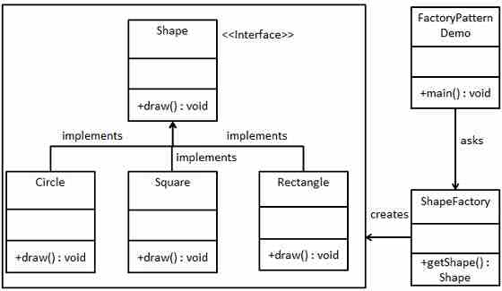Step 1
Create an interface.
Shape.java
public interface Shape {
void draw();
}
Step 2
Create concrete classes implementing the same interface.
Rectangle.java
public class Rectangle implements Shape {
@Override
public void draw() {
System.out.println("Inside Rectangle::draw() method.");
}
}
Square.java
public class Square implements Shape {
@Override
public void draw() {
System.out.println("Inside Square::draw() method.");
}
}
Circle.java
public class Circle implements Shape {
@Override
public void draw() {
System.out.println("Inside Circle::draw() method.");
}
}
Step 3
Create a Factory to generate object of concrete class based on given information.
ShapeFactory.java
public class ShapeFactory {
//use getShape method to get object of type shape
public Shape getShape(String shapeType){
if(shapeType == null){
return null;
}
if(shapeType.equalsIgnoreCase("CIRCLE")){
return new Circle();
} else if(shapeType.equalsIgnoreCase("RECTANGLE")){
return new Rectangle();
} else if(shapeType.equalsIgnoreCase("SQUARE")){
return new Square();
}
return null;
}
}
Step 4
Use the Factory to get object of concrete class by passing an information such as type.
FactoryPatternDemo.java
public class FactoryPatternDemo {
public static void main(String[] args) {
ShapeFactory shapeFactory = new ShapeFactory();
//get an object of Circle and call its draw method.
Shape shape1 = shapeFactory.getShape("CIRCLE");
//call draw method of Circle
shape1.draw();
//get an object of Rectangle and call its draw method.
Shape shape2 = shapeFactory.getShape("RECTANGLE");
//call draw method of Rectangle
shape2.draw();
//get an object of Square and call its draw method.
Shape shape3 = shapeFactory.getShape("SQUARE");
//call draw method of circle
shape3.draw();
}
}
Step 5
Verify the output.
Inside Circle::draw() method. Inside Rectangle::draw() method. Inside Square::draw() method.
Abstract Factory Pattern
Abstract Factory patterns works around a super-factory which creates other factories. This factory is also called as Factory of factories. This type of design pattern comes under creational pattern as this pattern provides one of the best ways to create an object.
In Abstract Factory pattern an interface is responsible for creating a factory of related objects, without explicitly specifying their classes. Each generated factory can give the objects as per the Factory pattern.
Implementation
We're going to create a Shape and Color interfaces and concrete classes implementing these interfaces. We creates an abstract factory class AbstractFactory as next step. Factory classes ShapeFactory and ColorFactory are defined where each factory extends AbstractFactory. A factory creator/generator class FactoryProducer is created.
AbstractFactoryPatternDemo, our demo class uses FactoryProducer to get a AbstractFactory object. It will pass information (CIRCLE / RECTANGLE / SQUARE for Shape) to AbstractFactory to get the type of object it needs. It also passes information (RED / GREEN / BLUE for Color) to AbstractFactory to get the type of object it needs.

Step 1
Create an interface for Shapes.
Shape.java
public interface Shape {
void draw();
}
Step 2
Create concrete classes implementing the same interface.
Rectangle.java
public class Rectangle implements Shape {
@Override
public void draw() {
System.out.println("Inside Rectangle::draw() method.");
}
}
Square.java
public class Square implements Shape {
@Override
public void draw() {
System.out.println("Inside Square::draw() method.");
}
}
Circle.java
public class Circle implements Shape {
@Override
public void draw() {
System.out.println("Inside Circle::draw() method.");
}
}
Step 3
Create an interface for Colors.
Color.java
public interface Color {
void fill();
}
Step4
Create concrete classes implementing the same interface.
Red.java
public class Red implements Color {
@Override
public void fill() {
System.out.println("Inside Red::fill() method.");
}
}
Green.java
public class Green implements Color {
@Override
public void fill() {
System.out.println("Inside Green::fill() method.");
}
}
Blue.java
public class Blue implements Color {
@Override
public void fill() {
System.out.println("Inside Blue::fill() method.");
}
}
Step 5
Create an Abstract class to get factories for Color and Shape Objects.
AbstractFactory.java
public abstract class AbstractFactory {
abstract Color getColor(String color);
abstract Shape getShape(String shape) ;
}
Step 6
Create Factory classes extending AbstractFactory to generate object of concrete class based on given information.
ShapeFactory.java
public class ShapeFactory extends AbstractFactory {
@Override
public Shape getShape(String shapeType){
if(shapeType == null){
return null;
}
if(shapeType.equalsIgnoreCase("CIRCLE")){
return new Circle();
} else if(shapeType.equalsIgnoreCase("RECTANGLE")){
return new Rectangle();
} else if(shapeType.equalsIgnoreCase("SQUARE")){
return new Square();
}
return null;
}
@Override
Color getColor(String color) {
return null;
}
}
ColorFactory.java
public class ColorFactory extends AbstractFactory {
@Override
public Shape getShape(String shapeType){
return null;
}
@Override
Color getColor(String color) {
if(color == null){
return null;
}
if(color.equalsIgnoreCase("RED")){
return new Red();
} else if(color.equalsIgnoreCase("GREEN")){
return new Green();
} else if(color.equalsIgnoreCase("BLUE")){
return new Blue();
}
return null;
}
}
Step 7
Create a Factory generator/producer class to get factories by passing an information such as Shape or Color
FactoryProducer.java
public class FactoryProducer {
public static AbstractFactory getFactory(String choice){
if(choice.equalsIgnoreCase("SHAPE")){
return new ShapeFactory();
} else if(choice.equalsIgnoreCase("COLOR")){
return new ColorFactory();
}
return null;
}
}
Step 8
Use the FactoryProducer to get AbstractFactory in order to get factories of concrete classes by passing an information such as type.
AbstractFactoryPatternDemo.java
public class AbstractFactoryPatternDemo {
public static void main(String[] args) {
//get shape factory
AbstractFactory shapeFactory = FactoryProducer.getFactory("SHAPE");
//get an object of Shape Circle
Shape shape1 = shapeFactory.getShape("CIRCLE");
//call draw method of Shape Circle
shape1.draw();
//get an object of Shape Rectangle
Shape shape2 = shapeFactory.getShape("RECTANGLE");
//call draw method of Shape Rectangle
shape2.draw();
//get an object of Shape Square
Shape shape3 = shapeFactory.getShape("SQUARE");
//call draw method of Shape Square
shape3.draw();
//get color factory
AbstractFactory colorFactory = FactoryProducer.getFactory("COLOR");
//get an object of Color Red
Color color1 = colorFactory.getColor("RED");
//call fill method of Red
color1.fill();
//get an object of Color Green
Color color2 = colorFactory.getColor("Green");
//call fill method of Green
color2.fill();
//get an object of Color Blue
Color color3 = colorFactory.getColor("BLUE");
//call fill method of Color Blue
color3.fill();
}
}
Step 9
Verify the output.
Inside Circle::draw() method. Inside Rectangle::draw() method. Inside Square::draw() method. Inside Red::fill() method. Inside Green::fill() method. Inside Blue::fill() method.
Singleton Pattern
Singleton pattern is one of the simplest design patterns in Java. This type of design pattern comes under creational pattern as this pattern provides one of the best way to create an object.
This pattern involves a single class which is responsible to creates own object while making sure that only single object get created. This class provides a way to access its only object which can be accessed directly without need to instantiate the object of the class.
Implementation
We're going to create a SingleObject class. SingleObject class have its constructor as private and have a static instance of itself.
SingleObject class provides a static method to get its static instance to outside world. SingletonPatternDemo, our demo class will use SingleObject class to get a SingleObject object.
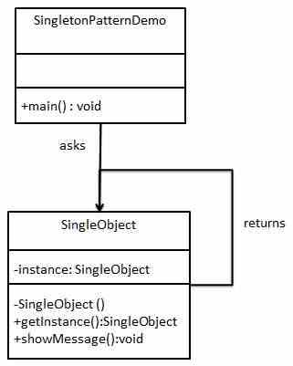Step 1
Create a Singleton Class.
SingleObject.java
public class SingleObject {
//create an object of SingleObject
private static SingleObject instance = new SingleObject();
//make the constructor private so that this class cannot be
//instantiated
private SingleObject(){}
//Get the only object available
public static SingleObject getInstance(){
return instance;
}
public void showMessage(){
System.out.println("Hello World!");
}
}
Step 2
Get the only object from the singleton class.
SingletonPatternDemo.java
public class SingletonPatternDemo {
public static void main(String[] args) {
//illegal construct
//Compile Time Error: The constructor SingleObject() is not visible
//SingleObject object = new SingleObject();
//Get the only object available
SingleObject object = SingleObject.getInstance();
//show the message
object.showMessage();
}
}
Step 3
Verify the output.
Hello World!
Builder Pattern
Builder pattern builds a complex object using simple objects and using a step by step approach. This type of design pattern comes under creational pattern as this pattern provides one of the best ways to create an object.
A Builder class builds the final object step by step. This builder is independent of other objects.
Implementation
We've considered a business case of fast-food restaurant where a typical meal could be a burger and a cold drink. Burger could be either a Veg Burger or Chicken Burger and will be packed by a wrapper. Cold drink could be either a coke or pepsi and will be packed in a bottle.
We're going to create an Item interface representing food items such as burgers and cold drinks and concrete classes implementing the Item interface and a Packing interface representing packaging of food items and concrete classes implementing the Packing interface as burger would be packed in wrapper and cold drink would be packed as bottle.
We then create a Meal class having ArrayList of Item and a MealBuilder to build different types of Meal object by combining Item. BuilderPatternDemo, our demo class will use MealBuilder to build a Meal.
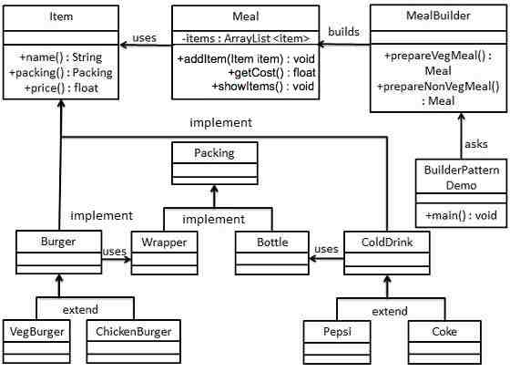Step 1
Create an interface Item representing food item and packing.
Item.java
public interface Item {
public String name();
public Packing packing();
public float price();
}
Packing.java
public interface Packing {
public String pack();
}
Step 2
Create concreate classes implementing the Packing interface.
Wrapper.java
public class Wrapper implements Packing {
@Override
public String pack() {
return "Wrapper";
}
}
Bottle.java
public class Bottle implements Packing {
@Override
public String pack() {
return "Bottle";
}
}
Step 3
Create abstract classes implementing the item interface providing default functionalities.
Burger.java
public abstract class Burger implements Item {
@Override
public Packing packing() {
return new Wrapper();
}
@Override
public abstract float price();
}
ColdDrink.java
public abstract class ColdDrink implements Item {
@Override
public Packing packing() {
return new Bottle();
}
@Override
public abstract float price();
}
Step 4
Create concrete classes extending Burger and ColdDrink classes
VegBurger.java
public class VegBurger extends Burger {
@Override
public float price() {
return 25.0f;
}
@Override
public String name() {
return "Veg Burger";
}
}
ChickenBurger.java
public class ChickenBurger extends Burger {
@Override
public float price() {
return 50.5f;
}
@Override
public String name() {
return "Chicken Burger";
}
}
Coke.java
public class Coke extends ColdDrink {
@Override
public float price() {
return 30.0f;
}
@Override
public String name() {
return "Coke";
}
}
Pepsi.java
public class Pepsi extends ColdDrink {
@Override
public float price() {
return 35.0f;
}
@Override
public String name() {
return "Pepsi";
}
}
Step 5
Create a Meal class having Item objects defined above.
Meal.java
import java.util.ArrayList;
import java.util.List;
public class Meal {
private List<Item> items = new ArrayList<Item>();
public void addItem(Item item){
items.add(item);
}
public float getCost(){
float cost = 0.0f;
for (Item item : items) {
cost += item.price();
}
return cost;
}
public void showItems(){
for (Item item : items) {
System.out.print("Item : "+item.name());
System.out.print(", Packing : "+item.packing().pack());
System.out.println(", Price : "+item.price());
}
}
}
Step 6
Create a MealBuilder class, the actual builder class responsible to create Meal objects.
MealBuilder.java
public class MealBuilder {
public Meal prepareVegMeal (){
Meal meal = new Meal();
meal.addItem(new VegBurger());
meal.addItem(new Coke());
return meal;
}
public Meal prepareNonVegMeal (){
Meal meal = new Meal();
meal.addItem(new ChickenBurger());
meal.addItem(new Pepsi());
return meal;
}
}
Step 7
BuiderPatternDemo uses MealBuider to demonstrate builder pattern.
BuilderPatternDemo.java
public class BuilderPatternDemo {
public static void main(String[] args) {
MealBuilder mealBuilder = new MealBuilder();
Meal vegMeal = mealBuilder.prepareVegMeal();
System.out.println("Veg Meal");
vegMeal.showItems();
System.out.println("Total Cost: " +vegMeal.getCost());
Meal nonVegMeal = mealBuilder.prepareNonVegMeal();
System.out.println("\n\nNon-Veg Meal");
nonVegMeal.showItems();
System.out.println("Total Cost: " +nonVegMeal.getCost());
}
}
Step 8
Verify the output.
Veg Meal Item : Veg Burger, Packing : Wrapper, Price : 25.0 Item : Coke, Packing : Bottle, Price : 30.0 Total Cost: 55.0 Non-Veg Meal Item : Chicken Burger, Packing : Wrapper, Price : 50.5 Item : Pepsi, Packing : Bottle, Price : 35.0 Total Cost: 85.5
Prototype Pattern
Prototype pattern refers to creating duplicate object while keeping performance in mind. This type of design pattern comes under creational pattern as this pattern provides one of the best way to create an object.
This pattern involves implementing a prototype interface which tells to create a clone of the current object. This pattern is used when creation of object directly is costly. For example, a object is to be created after a costly database operation. We can cache the object, returns its clone on next request and update the database as as and when needed thus reducing database calls.
Implementation
We're going to create an abstract class Shape and concrete classes extending the Shape class. A class ShapeCache is defined as a next step which stores shape objects in a Hashtable and returns their clone when requested.
PrototypPatternDemo, our demo class will use ShapeCache class to get a Shape object.
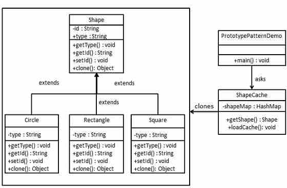Step 1
Create an abstract class implementing Clonable interface.
Shape.java
public abstract class Shape implements Cloneable {
private String id;
protected String type;
abstract void draw();
public String getType(){
return type;
}
public String getId() {
return id;
}
public void setId(String id) {
this.id = id;
}
public Object clone() {
Object clone = null;
try {
clone = super.clone();
} catch (CloneNotSupportedException e) {
e.printStackTrace();
}
return clone;
}
}
Step 2
Create concrete classes extending the above class.
Rectangle.java
public class Rectangle extends Shape {
public Rectangle(){
type = "Rectangle";
}
@Override
public void draw() {
System.out.println("Inside Rectangle::draw() method.");
}
}
Square.java
public class Square extends Shape {
public Square(){
type = "Square";
}
@Override
public void draw() {
System.out.println("Inside Square::draw() method.");
}
}
Circle.java
public class Circle extends Shape {
public Circle(){
type = "Circle";
}
@Override
public void draw() {
System.out.println("Inside Circle::draw() method.");
}
}
Step 3
Create a class to get concreate classes from database and store them in a Hashtable.
ShapeCache.java
import java.util.Hashtable;
public class ShapeCache {
private static Hashtable<String, Shape> shapeMap
= new Hashtable<String, Shape>();
public static Shape getShape(String shapeId) {
Shape cachedShape = shapeMap.get(shapeId);
return (Shape) cachedShape.clone();
}
// for each shape run database query and create shape
// shapeMap.put(shapeKey, shape);
// for example, we are adding three shapes
public static void loadCache() {
Circle circle = new Circle();
circle.setId("1");
shapeMap.put(circle.getId(),circle);
Square square = new Square();
square.setId("2");
shapeMap.put(square.getId(),square);
Rectangle rectangle = new Rectangle();
rectangle.setId("3");
shapeMap.put(rectangle.getId(),rectangle);
}
}
Step 4
PrototypePatternDemo uses ShapeCache class to get clones of shapes stored in a Hashtable.
PrototypePatternDemo.java
public class PrototypePatternDemo {
public static void main(String[] args) {
ShapeCache.loadCache();
Shape clonedShape = (Shape) ShapeCache.getShape("1");
System.out.println("Shape : " + clonedShape.getType());
Shape clonedShape2 = (Shape) ShapeCache.getShape("2");
System.out.println("Shape : " + clonedShape2.getType());
Shape clonedShape3 = (Shape) ShapeCache.getShape("3");
System.out.println("Shape : " + clonedShape3.getType());
}
}
Step 5
Verify the output.
Shape : Circle Shape : Square Shape : Rectangle
Adapter Pattern
Adapter pattern works as a bridge between two incompatible interfaces. This type of design pattern comes under structural pattern as this pattern combines the capability of two independent interfaces.
This pattern involves a single class which is responsible to join functionalities of independent or incompatible interfaces. A real life example could be a case of card reader which acts as an adapter between memory card and a laptop. You plugins the memory card into card reader and card reader into the laptop so that memory card can be read via laptop.
We are demonstrating use of Adapter pattern via following example in which an audio player device can play mp3 files only and wants to use an advanced audio player capable of playing vlc and mp4 files.
Implementation
We've an interface MediaPlayer interface and a concrete class AudioPlayer implementing the MediaPlayer interface. AudioPlayer can play mp3 format audio files by default.
We're having another interface AdvancedMediaPlayer and concrete classes implementing the AdvancedMediaPlayer interface.These classes can play vlc and mp4 format files.
We want to make AudioPlayer to play other formats as well. To attain this, we've created an adapter class MediaAdapter which implements the MediaPlayer interface and uses AdvancedMediaPlayer objects to play the required format.
AudioPlayer uses the adapter class MediaAdapter passing it the desired audio type without knowing the actual class which can play the desired format. AdapterPatternDemo, our demo class will use AudioPlayer class to play various formats.
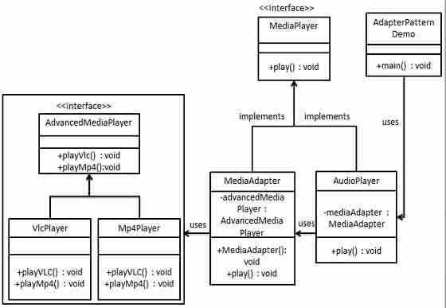Step 1
Create interfaces for Media Player and Advanced Media Player.
MediaPlayer.java
public interface MediaPlayer {
public void play(String audioType, String fileName);
}
AdvancedMediaPlayer.java
public interface AdvancedMediaPlayer {
public void playVlc(String fileName);
public void playMp4(String fileName);
}
Step 2
Create concrete classes implementing the AdvancedMediaPlayer interface.
VlcPlayer.java
public class VlcPlayer implements AdvancedMediaPlayer{
@Override
public void playVlc(String fileName) {
System.out.println("Playing vlc file. Name: "+ fileName);
}
@Override
public void playMp4(String fileName) {
//do nothing
}
}
Mp4Player.java
public class Mp4Player implements AdvancedMediaPlayer{
@Override
public void playVlc(String fileName) {
//do nothing
}
@Override
public void playMp4(String fileName) {
System.out.println("Playing mp4 file. Name: "+ fileName);
}
}
Step 3
Create adapter class implementing the MediaPlayer interface.
MediaAdapter.java
public class MediaAdapter implements MediaPlayer {
AdvancedMediaPlayer advancedMusicPlayer;
public MediaAdapter(String audioType){
if(audioType.equalsIgnoreCase("vlc") ){
advancedMusicPlayer = new VlcPlayer();
} else if (audioType.equalsIgnoreCase("mp4")){
advancedMusicPlayer = new Mp4Player();
}
}
@Override
public void play(String audioType, String fileName) {
if(audioType.equalsIgnoreCase("vlc")){
advancedMusicPlayer.playVlc(fileName);
}else if(audioType.equalsIgnoreCase("mp4")){
advancedMusicPlayer.playMp4(fileName);
}
}
}
Step 4
Create concrete class implementing the MediaPlayer interface.
AudioPlayer.java
public class AudioPlayer implements MediaPlayer {
MediaAdapter mediaAdapter;
@Override
public void play(String audioType, String fileName) {
//inbuilt support to play mp3 music files
if(audioType.equalsIgnoreCase("mp3")){
System.out.println("Playing mp3 file. Name: "+ fileName);
}
//mediaAdapter is providing support to play other file formats
else if(audioType.equalsIgnoreCase("vlc")
|| audioType.equalsIgnoreCase("mp4")){
mediaAdapter = new MediaAdapter(audioType);
mediaAdapter.play(audioType, fileName);
}
else{
System.out.println("Invalid media. "+
audioType + " format not supported");
}
}
}
Step 5
Use the AudioPlayer to play different types of audio formats.
AdapterPatternDemo.java
public class AdapterPatternDemo {
public static void main(String[] args) {
AudioPlayer audioPlayer = new AudioPlayer();
audioPlayer.play("mp3", "beyond the horizon.mp3");
audioPlayer.play("mp4", "alone.mp4");
audioPlayer.play("vlc", "far far away.vlc");
audioPlayer.play("avi", "mind me.avi");
}
}
Step 6
Verify the output.
Playing mp3 file. Name: beyond the horizon.mp3 Playing mp4 file. Name: alone.mp4 Playing vlc file. Name: far far away.vlc Invalid media. avi format not supported
Bridge Pattern
Bridge is used where we need to decouple an abstraction from its implementation so that the two can vary independently. This type of design pattern comes under structural pattern as this pattern decouples implementation class and abstract class by providing a bridge structure between them.
This pattern involves an interface which acts as a bridge which makes the functionality of concrete classes independent from interface implementer classes. Both types of classes can be altered structurally without affecting each other.
We are demonstrating use of Bridge pattern via following example in which a circle can be drawn in different colors using same abstract class method but different bridge implementer classes.
Implementation
We've an interface DrawAPI interface which is acting as a bridge implementer and concrete classes RedCircle, GreenCircle implementing the DrawAPI interface. Shape is an abstract class and will use object of DrawAPI. BridgePatternDemo, our demo class will use Shape class to draw different colored circle.
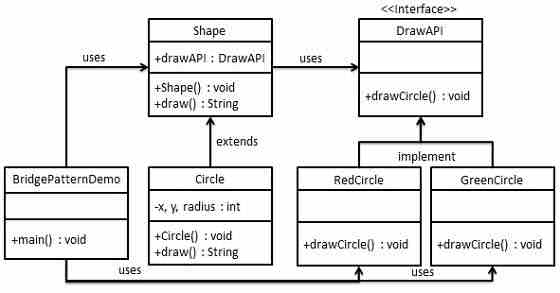Step 1
Create bridge implementer interface.
DrawAPI.java
public interface DrawAPI {
public void drawCircle(int radius, int x, int y);
}
Step 2
Create concrete bridge implementer classes implementing the DrawAPI interface.
RedCircle.java
public class RedCircle implements DrawAPI {
@Override
public void drawCircle(int radius, int x, int y) {
System.out.println("Drawing Circle[ color: red, radius: "
+ radius +", x: " +x+", "+ y +"]");
}
}
GreenCircle.java
public class GreenCircle implements DrawAPI {
@Override
public void drawCircle(int radius, int x, int y) {
System.out.println("Drawing Circle[ color: green, radius: "
+ radius +", x: " +x+", "+ y +"]");
}
}
Step 3
Create an abstract class Shape using the DrawAPI interface.
Shape.java
public abstract class Shape {
protected DrawAPI drawAPI;
protected Shape(DrawAPI drawAPI){
this.drawAPI = drawAPI;
}
public abstract void draw();
}
Step 4
Create concrete class implementing the Shape interface.
Circle.java
public class Circle extends Shape {
private int x, y, radius;
public Circle(int x, int y, int radius, DrawAPI drawAPI) {
super(drawAPI);
this.x = x;
this.y = y;
this.radius = radius;
}
public void draw() {
drawAPI.drawCircle(radius,x,y);
}
}
Step 5
Use the Shape and DrawAPI classes to draw different colored circles.
BridgePatternDemo.java
public class BridgePatternDemo {
public static void main(String[] args) {
Shape redCircle = new Circle(100,100, 10, new RedCircle());
Shape greenCircle = new Circle(100,100, 10, new GreenCircle());
redCircle.draw();
greenCircle.draw();
}
}
Step 6
Verify the output.
Drawing Circle[ color: red, radius: 10, x: 100, 100] Drawing Circle[ color: green, radius: 10, x: 100, 100]
Filter/Criteria Pattern
Filter pattern or Criteria pattern is a design pattern that enables developers to filter a set of objects, using different criteria, chaining them in a decoupled way through logical operations. This type of design pattern comes under structural pattern as this pattern is combining multiple criteria to obtain single criteria.
Implementation
We're going to create a Person object, Criteria interface and concrete classes implementing this interface to filter list of Person objects. CriteriaPatternDemo, our demo class uses Criteria objects to filter List of Person objects based on various criteria and their combinations.
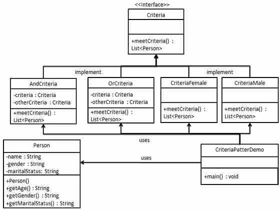Step 1
Create a class on which criteria is to be applied.
Person.java
public class Person {
private String name;
private String gender;
private String maritalStatus;
public Person(String name,String gender,String maritalStatus){
this.name = name;
this.gender = gender;
this.maritalStatus = maritalStatus;
}
public String getName() {
return name;
}
public String getGender() {
return gender;
}
public String getMaritalStatus() {
return maritalStatus;
}
}
Step 2
Create an interface for Criteria.
Criteria.java
import java.util.List;
public interface Criteria {
public List<Person> meetCriteria(List<Person> persons);
}
Step 3
Create concrete classes implementing the Criteria interface.
CriteriaMale.java
import java.util.ArrayList;
import java.util.List;
public class CriteriaMale implements Criteria {
@Override
public List<Person> meetCriteria(List<Person> persons) {
List<Person> malePersons = new ArrayList<Person>();
for (Person person : persons) {
if(person.getGender().equalsIgnoreCase("MALE")){
malePersons.add(person);
}
}
return malePersons;
}
}
CriteriaFemale.java
import java.util.ArrayList;
import java.util.List;
public class CriteriaFemale implements Criteria {
@Override
public List<Person> meetCriteria(List<Person> persons) {
List<Person> femalePersons = new ArrayList<Person>();
for (Person person : persons) {
if(person.getGender().equalsIgnoreCase("FEMALE")){
femalePersons.add(person);
}
}
return femalePersons;
}
}
CriteriaSingle.java
import java.util.ArrayList;
import java.util.List;
public class CriteriaSingle implements Criteria {
@Override
public List<Person> meetCriteria(List<Person> persons) {
List<Person> singlePersons = new ArrayList<Person>();
for (Person person : persons) {
if(person.getMaritalStatus().equalsIgnoreCase("SINGLE")){
singlePersons.add(person);
}
}
return singlePersons;
}
}
AndCriteria.java
import java.util.List;
public class AndCriteria implements Criteria {
private Criteria criteria;
private Criteria otherCriteria;
public AndCriteria(Criteria criteria, Criteria otherCriteria) {
this.criteria = criteria;
this.otherCriteria = otherCriteria;
}
@Override
public List<Person> meetCriteria(List<Person> persons) {
List<Person> firstCriteriaPersons = criteria.meetCriteria(persons);
return otherCriteria.meetCriteria(firstCriteriaPersons);
}
}
OrCriteria.java
import java.util.List;
public class AndCriteria implements Criteria {
private Criteria criteria;
private Criteria otherCriteria;
public AndCriteria(Criteria criteria, Criteria otherCriteria) {
this.criteria = criteria;
this.otherCriteria = otherCriteria;
}
@Override
public List<Person> meetCriteria(List<Person> persons) {
List<Person> firstCriteriaItems = criteria.meetCriteria(persons);
List<Person> otherCriteriaItems = otherCriteria.meetCriteria(persons);
for (Person person : otherCriteriaItems) {
if(!firstCriteriaItems.contains(person)){
firstCriteriaItems.add(person);
}
}
return firstCriteriaItems;
}
}
Step4
Use different Criteria and their combination to filter out persons.
CriteriaPatternDemo.java
public class CriteriaPatternDemo {
public static void main(String[] args) {
List<Person> persons = new ArrayList<Person>();
persons.add(new Person("Robert","Male", "Single"));
persons.add(new Person("John","Male", "Married"));
persons.add(new Person("Laura","Female", "Married"));
persons.add(new Person("Diana","Female", "Single"));
persons.add(new Person("Mike","Male", "Single"));
persons.add(new Person("Bobby","Male", "Single"));
Criteria male = new CriteriaMale();
Criteria female = new CriteriaFemale();
Criteria single = new CriteriaSingle();
Criteria singleMale = new AndCriteria(single, male);
Criteria singleOrFemale = new OrCriteria(single, female);
System.out.println("Males: ");
printPersons(male.meetCriteria(persons));
System.out.println("\nFemales: ");
printPersons(female.meetCriteria(persons));
System.out.println("\nSingle Males: ");
printPersons(singleMale.meetCriteria(persons));
System.out.println("\nSingle Or Females: ");
printPersons(singleOrFemale.meetCriteria(persons));
}
public static void printPersons(List<Person> persons){
for (Person person : persons) {
System.out.println("Person : [ Name : " + person.getName()
+", Gender : " + person.getGender()
+", Marital Status : " + person.getMaritalStatus()
+" ]");
}
}
}
Step 5
Verify the output.
Males: Person : [ Name : Robert, Gender : Male, Marital Status : Single ] Person : [ Name : John, Gender : Male, Marital Status : Married ] Person : [ Name : Mike, Gender : Male, Marital Status : Single ] Person : [ Name : Bobby, Gender : Male, Marital Status : Single ] Females: Person : [ Name : Laura, Gender : Female, Marital Status : Married ] Person : [ Name : Diana, Gender : Female, Marital Status : Single ] Single Males: Person : [ Name : Robert, Gender : Male, Marital Status : Single ] Person : [ Name : Mike, Gender : Male, Marital Status : Single ] Person : [ Name : Bobby, Gender : Male, Marital Status : Single ] Single Or Females: Person : [ Name : Robert, Gender : Male, Marital Status : Single ] Person : [ Name : Diana, Gender : Female, Marital Status : Single ] Person : [ Name : Mike, Gender : Male, Marital Status : Single ] Person : [ Name : Bobby, Gender : Male, Marital Status : Single ] Person : [ Name : Laura, Gender : Female, Marital Status : Married ]
Composite Pattern
Composite pattern is used where we need to treat a group of objects in similar way as a single object. Composite pattern composes objects in term of a tree structure to represent part as well as whole hierarchy . This type of design pattern comes under structural pattern as this pattern creates a tree structure of group of objects.
This pattern creates a class contains group of its own objects. This class provides ways to modify its group of same objects.
We are demonstrating use of Composite pattern via following example in which show employees hierarchy of an organization.
Implementation
We've a class Employee which acts as composite pattern actor class. CompositePatternDemo, our demo class will use Employee class to add department level hierarchy and print all employees.
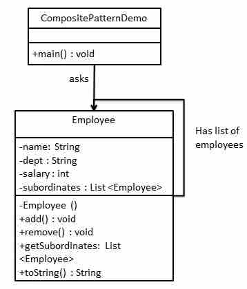Step 1
Create Employee class having list of Employee objects.
Employee.java
import java.util.ArrayList;
import java.util.List;
public class Employee {
private String name;
private String dept;
private int salary;
private List<Employee> subordinates;
// constructor
public Employee(String name,String dept, int sal) {
this.name = name;
this.dept = dept;
this.salary = sal;
subordinates = new ArrayList<Employee>();
}
public void add(Employee e) {
subordinates.add(e);
}
public void remove(Employee e) {
subordinates.remove(e);
}
public List<Employee> getSubordinates(){
return subordinates;
}
public String toString(){
return ("Employee :[ Name : "+ name
+", dept : "+ dept + ", salary :"
+ salary+" ]");
}
}
Step 2
Use the Employee class to create and print employee hierarchy.
CompositePatternDemo.java
public class CompositePatternDemo {
public static void main(String[] args) {
Employee CEO = new Employee("John","CEO", 30000);
Employee headSales = new Employee("Robert","Head Sales", 20000);
Employee headMarketing = new Employee("Michel","Head Marketing", 20000);
Employee clerk1 = new Employee("Laura","Marketing", 10000);
Employee clerk2 = new Employee("Bob","Marketing", 10000);
Employee salesExecutive1 = new Employee("Richard","Sales", 10000);
Employee salesExecutive2 = new Employee("Rob","Sales", 10000);
CEO.add(headSales);
CEO.add(headMarketing);
headSales.add(salesExecutive1);
headSales.add(salesExecutive2);
headMarketing.add(clerk1);
headMarketing.add(clerk2);
//print all employees of the organization
System.out.println(CEO);
for (Employee headEmployee : CEO.getSubordinates()) {
System.out.println(headEmployee);
for (Employee employee : headEmployee.getSubordinates()) {
System.out.println(employee);
}
}
}
}
Step 3
Verify the output.
Employee :[ Name : John, dept : CEO, salary :30000 ] Employee :[ Name : Robert, dept : Head Sales, salary :20000 ] Employee :[ Name : Richard, dept : Sales, salary :10000 ] Employee :[ Name : Rob, dept : Sales, salary :10000 ] Employee :[ Name : Michel, dept : Head Marketing, salary :20000 ] Employee :[ Name : Laura, dept : Marketing, salary :10000 ] Employee :[ Name : Bob, dept : Marketing, salary :10000 ]
Decorator Pattern
Decorator pattern allows to add new functionality an existing object without altering its structure. This type of design pattern comes under structural pattern as this pattern acts as a wrapper to existing class.
This pattern creates a decorator class which wraps the original class and provides additional functionality keeping class methods signature intact.
We are demonstrating use of Decorator pattern via following example in which we'll decorate a shape with some color without alter shape class.
Implementation
We're going to create a Shape interface and concrete classes implementing the Shape interface. We then create a abstract decorator class ShapeDecorator implementing the Shape interface and having Shape object as its instance variable.
RedShapeDecorator is concrete class implementing ShapeDecorator.
DecoratorPatternDemo, our demo class will use RedShapeDecorator to decorate Shape objects.
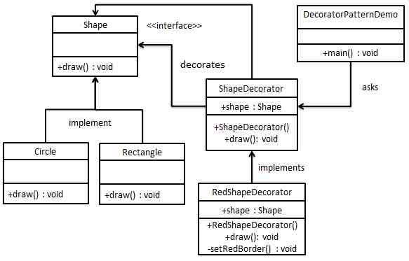Step 1
Create an interface.
Shape.java
public interface Shape {
void draw();
}
Step 2
Create concrete classes implementing the same interface.
Rectangle.java
public class Rectangle implements Shape {
@Override
public void draw() {
System.out.println("Shape: Rectangle");
}
}
Circle.java
public class Circle implements Shape {
@Override
public void draw() {
System.out.println("Shape: Circle");
}
}
Step 3
Create abstract decorator class implementing the Shape interface.
ShapeDecorator.java
public abstract class ShapeDecorator implements Shape {
protected Shape decoratedShape;
public ShapeDecorator(Shape decoratedShape){
this.decoratedShape = decoratedShape;
}
public void draw(){
decoratedShape.draw();
}
}
Step 4
Create concrete decorator class extending the ShapeDecorator class.
RedShapeDecorator.java
public class RedShapeDecorator extends ShapeDecorator {
public RedShapeDecorator(Shape decoratedShape) {
super(decoratedShape);
}
@Override
public void draw() {
decoratedShape.draw();
setRedBorder(decoratedShape);
}
private void setRedBorder(Shape decoratedShape){
System.out.println("Border Color: Red");
}
}
Step 5
Use the RedShapeDecorator to decorate Shape objects.
DecoratorPatternDemo.java
public class DecoratorPatternDemo {
public static void main(String[] args) {
Shape circle = new Circle();
Shape redCircle = new RedShapeDecorator(new Circle());
Shape redRectangle = new RedShapeDecorator(new Rectangle());
System.out.println("Circle with normal border");
circle.draw();
System.out.println("\nCircle of red border");
redCircle.draw();
System.out.println("\nRectangle of red border");
redRectangle.draw();
}
}
Step 6
Verify the output.
Circle with normal border Shape: Circle Circle of red border Shape: Circle Border Color: Red Rectangle of red border Shape: Rectangle Border Color: Red
Facade Pattern
Facade pattern hides the complexities of the system and provides an interface to the client using which the client can access the system. This type of design pattern comes under structural pattern as this pattern adds an interface to exiting system to hide its complexities.
This pattern involves a single class which provides simplified methods which are required by client and delegates calls to existing system classes methods.
Implementation
We're going to create a Shape interface and concrete classes implementing the Shape interface. A facade class ShapeMaker is defined as a next step.
ShapeMaker class uses the concrete classes to delegates user calls to these classes. FacadePatternDemo, our demo class will use ShapeMaker class to show the results.
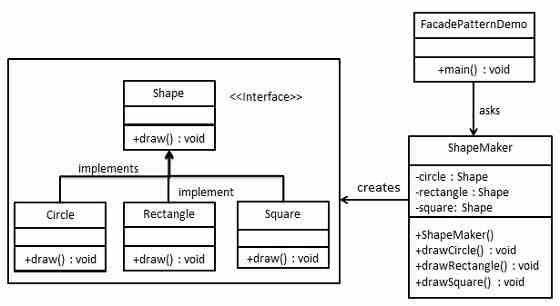Step 1
Create an interface.
Shape.java
public interface Shape {
void draw();
}
Step 2
Create concrete classes implementing the same interface.
Rectangle.java
public class Rectangle implements Shape {
@Override
public void draw() {
System.out.println("Rectangle::draw()");
}
}
Square.java
public class Square implements Shape {
@Override
public void draw() {
System.out.println("Square::draw()");
}
}
Circle.java
public class Circle implements Shape {
@Override
public void draw() {
System.out.println("Circle::draw()");
}
}
Step 3
Create a facade class.
ShapeMaker.java
public class ShapeMaker {
private Shape circle;
private Shape rectangle;
private Shape square;
public ShapeMaker() {
circle = new Circle();
rectangle = new Rectangle();
square = new Square();
}
public void drawCircle(){
circle.draw();
}
public void drawRectangle(){
rectangle.draw();
}
public void drawSquare(){
square.draw();
}
}
Step 4
Use the facade to draw various types of shapes.
FacadePatternDemo.java
public class FacadePatternDemo {
public static void main(String[] args) {
ShapeMaker shapeMaker = new ShapeMaker();
shapeMaker.drawCircle();
shapeMaker.drawRectangle();
shapeMaker.drawSquare();
}
}
Step 5
Verify the output.
Circle::draw() Rectangle::draw() Square::draw()
Flyweight Pattern
Flyweight pattern is primarily used to reduce the number of objects created, to decrease memory footprint and increase performance. This type of design pattern comes under structural pattern as this pattern provides ways to decrease objects count thus improving application required objects structure.
Flyweight pattern try to reuse already existing similar kind objects by storing them and creates new object when no matching object is found. We'll demonstrate this pattern by drawing 20 circle of different locations but we'll creating only 5 objects. Only 5 colors are available so color property is used to check already existing Circle objects.
Implementation
We're going to create a Shape interface and concrete class Circle implementing the Shape interface. A factory class ShapeFactory is defined as a next step.
ShapeFactory have a HashMap of Circle having key as color of the Circle object. Whenever a request comes to create a circle of particular color to ShapeFactory. ShapeFactory checks the circle object in its HashMap, if object of Circle found, that object is returned otherwise a new object is created, stored in hashmap for future use and returned to client.
FlyWeightPatternDemo, our demo class will use ShapeFactory to get a Shape object. It will pass information (red / green / blue/ black / white) to ShapeFactory to get the circle of desired color it needs.
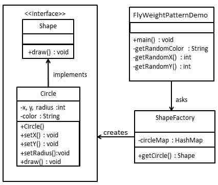Step 1
Create an interface.
Shape.java
public interface Shape {
void draw();
}
Step 2
Create concrete class implementing the same interface.
Circle.java
public class Circle implements Shape {
private String color;
private int x;
private int y;
private int radius;
public Circle(String color){
this.color = color;
}
public void setX(int x) {
this.x = x;
}
public void setY(int y) {
this.y = y;
}
public void setRadius(int radius) {
this.radius = radius;
}
@Override
public void draw() {
System.out.println("Circle: Draw() [Color : " + color
+", x : " + x +", y :" + y +", radius :" + radius);
}
}
Step 3
Create a Factory to generate object of concrete class based on given information.
ShapeFactory.java
import java.util.HashMap;
public class ShapeFactory {
private static final HashMap<String, Shape> circleMap = new HashMap();
public static Shape getCircle(String color) {
Circle circle = (Circle)circleMap.get(color);
if(circle == null) {
circle = new Circle(color);
circleMap.put(color, circle);
System.out.println("Creating circle of color : " + color);
}
return circle;
}
}
Step 4
Use the Factory to get object of concrete class by passing an information such as color.
FlyweightPatternDemo.java
public class FlyweightPatternDemo {
private static final String colors[] =
{ "Red", "Green", "Blue", "White", "Black" };
public static void main(String[] args) {
for(int i=0; i < 20; ++i) {
Circle circle =
(Circle)ShapeFactory.getCircle(getRandomColor());
circle.setX(getRandomX());
circle.setY(getRandomY());
circle.setRadius(100);
circle.draw();
}
}
private static String getRandomColor() {
return colors[(int)(Math.random()*colors.length)];
}
private static int getRandomX() {
return (int)(Math.random()*100 );
}
private static int getRandomY() {
return (int)(Math.random()*100);
}
}
Step 5
Verify the output.
Creating circle of color : Black Circle: Draw() [Color : Black, x : 36, y :71, radius :100 Creating circle of color : Green Circle: Draw() [Color : Green, x : 27, y :27, radius :100 Creating circle of color : White Circle: Draw() [Color : White, x : 64, y :10, radius :100 Creating circle of color : Red Circle: Draw() [Color : Red, x : 15, y :44, radius :100 Circle: Draw() [Color : Green, x : 19, y :10, radius :100 Circle: Draw() [Color : Green, x : 94, y :32, radius :100 Circle: Draw() [Color : White, x : 69, y :98, radius :100 Creating circle of color : Blue Circle: Draw() [Color : Blue, x : 13, y :4, radius :100 Circle: Draw() [Color : Green, x : 21, y :21, radius :100 Circle: Draw() [Color : Blue, x : 55, y :86, radius :100 Circle: Draw() [Color : White, x : 90, y :70, radius :100 Circle: Draw() [Color : Green, x : 78, y :3, radius :100 Circle: Draw() [Color : Green, x : 64, y :89, radius :100 Circle: Draw() [Color : Blue, x : 3, y :91, radius :100 Circle: Draw() [Color : Blue, x : 62, y :82, radius :100 Circle: Draw() [Color : Green, x : 97, y :61, radius :100 Circle: Draw() [Color : Green, x : 86, y :12, radius :100 Circle: Draw() [Color : Green, x : 38, y :93, radius :100 Circle: Draw() [Color : Red, x : 76, y :82, radius :100 Circle: Draw() [Color : Blue, x : 95, y :82, radius :100
Proxy Pattern
In Proxy pattern, a class represents functionality of another class. This type of design pattern comes under structural pattern.
In Proxy pattern, we create object having original object to interface its functionality to outer world.
Implementation
We're going to create a Image interface and concrete classes implementing the Image interface. ProxyImage is a a proxy class to reduce memory footprint of RealImage object loading.
ProxyPatternDemo, our demo class will use ProxyImage to get a Image object to load and display as it needs.
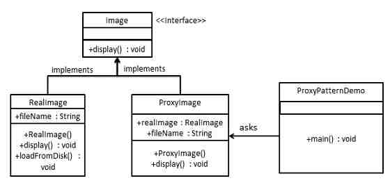Step 1
Create an interface.
Image.java
public interface Image {
void display();
}
Step 2
Create concrete classes implementing the same interface.
RealImage.java
public class RealImage implements Image {
private String fileName;
public RealImage(String fileName){
this.fileName = fileName;
loadFromDisk(fileName);
}
@Override
public void display() {
System.out.println("Displaying " + fileName);
}
private void loadFromDisk(String fileName){
System.out.println("Loading " + fileName);
}
}
ProxyImage.java
public class ProxyImage implements Image{
private RealImage realImage;
private String fileName;
public ProxyImage(String fileName){
this.fileName = fileName;
}
@Override
public void display() {
if(realImage == null){
realImage = new RealImage(fileName);
}
realImage.display();
}
}
Step 3
Use the ProxyImage to get object of RealImage class when required.
ProxyPatternDemo.java
public class ProxyPatternDemo {
public static void main(String[] args) {
Image image = new ProxyImage("test_10mb.jpg");
//image will be loaded from disk
image.display();
System.out.println("");
//image will not be loaded from disk
image.display();
}
}
Step 4
Verify the output.
Loading test_10mb.jpg Displaying test_10mb.jpg Displaying test_10mb.jpg
Chain of Responsibility Pattern
As the name suggest, the chain of responsibility pattern creates a chain of receiver objects for a request. This pattern decouples sender and receiver of a request based on type of request. This pattern comes under behavioral patterns.
In this pattern, normally each receiver contains reference to another receiver. If one object cannot handle the request then it passes the same to the next receiver and so on.
Implementation
We've created an abstract class AbstractLogger with a level of logging. Then we've created three types of loggers extending the AbstractLogger. Each logger checks the level of message to its level and print accordingly otherwise does not print and pass the message to its next logger.

Step 1
Create an abstract logger class.
AbstractLogger.java
public abstract class AbstractLogger {
public static int INFO = 1;
public static int DEBUG = 2;
public static int ERROR = 3;
protected int level;
//next element in chain or responsibility
protected AbstractLogger nextLogger;
public void setNextLogger(AbstractLogger nextLogger){
this.nextLogger = nextLogger;
}
public void logMessage(int level, String message){
if(this.level <= level){
write(message);
}
if(nextLogger !=null){
nextLogger.logMessage(level, message);
}
}
abstract protected void write(String message);
}
Step 2
Create concrete classes extending the logger.
ConsoleLogger.java
public class ConsoleLogger extends AbstractLogger {
public ConsoleLogger(int level){
this.level = level;
}
@Override
protected void write(String message) {
System.out.println("Standard Console::Logger: " + message);
}
}
ErrorLogger.java
public class ErrorLogger extends AbstractLogger {
public ErrorLogger(int level){
this.level = level;
}
@Override
protected void write(String message) {
System.out.println("Error Console::Logger: " + message);
}
}
FileLogger.java
public class FileLogger extends AbstractLogger {
public FileLogger(int level){
this.level = level;
}
@Override
protected void write(String message) {
System.out.println("File::Logger: " + message);
}
}
Step 3
Create different types of loggers. Assign them error levels and set next logger in each logger. Next logger in each logger represents the part of the chain.
ChainPatternDemo.java
public class ChainPatternDemo {
private static AbstractLogger getChainOfLoggers(){
AbstractLogger errorLogger = new ErrorLogger(AbstractLogger.ERROR);
AbstractLogger fileLogger = new FileLogger(AbstractLogger.DEBUG);
AbstractLogger consoleLogger = new ConsoleLogger(AbstractLogger.INFO);
errorLogger.setNextLogger(fileLogger);
fileLogger.setNextLogger(consoleLogger);
return errorLogger;
}
public static void main(String[] args) {
AbstractLogger loggerChain = getChainOfLoggers();
loggerChain.logMessage(AbstractLogger.INFO,
"This is an information.");
loggerChain.logMessage(AbstractLogger.DEBUG,
"This is an debug level information.");
loggerChain.logMessage(AbstractLogger.ERROR,
"This is an error information.");
}
}
Step 4
Verify the output.
Standard Console::Logger: This is an information. File::Logger: This is an debug level information. Standard Console::Logger: This is an debug level information. Error Console::Logger: This is an error information. File::Logger: This is an error information. Standard Console::Logger: This is an error information.
Command Pattern
Command pattern is a data driven design pattern and falls under behavioral pattern category. A request is wrapped under a object as command and passed to invoker object. Invoker object looks for the appropriate object which can handle this command and pass the command to the corresponding object and that object executes the command.
Implementation
We've created an interface Order which is acting as a command. We've created a Stock class which acts as a request. We've concrete command classes BuyStock and SellStock implementing Order interface which will do actual command processing. A class Broker is created which acts as a invoker object. It can take order and place orders.
Broker object uses command pattern to identify which object will execute which command based on type of command. CommandPatternDemo, our demo class will use Broker class to demonstrate command pattern.
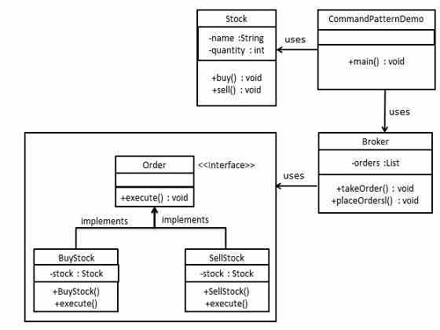Step 1
Create a command interface.
Order.java
public interface Order {
void execute();
}
Step 2
Create a request class.
Stock.java
public class Stock {
private String name = "ABC";
private int quantity = 10;
public void buy(){
System.out.println("Stock [ Name: "+name+",
Quantity: " + quantity +" ] bought");
}
public void sell(){
System.out.println("Stock [ Name: "+name+",
Quantity: " + quantity +" ] sold");
}
}
Step 3
Create concrete classes implementing the Order interface.
BuyStock.java
public class BuyStock implements Order {
private Stock abcStock;
public BuyStock(Stock abcStock){
this.abcStock = abcStock;
}
public void execute() {
abcStock.buy();
}
}
SellStock.java
public class SellStock implements Order {
private Stock abcStock;
public SellStock(Stock abcStock){
this.abcStock = abcStock;
}
public void execute() {
abcStock.sell();
}
}
Step 4
Create command invoker class.
Broker.java
import java.util.ArrayList;
import java.util.List;
public class Broker {
private List<Order> orderList = new ArrayList<Order>();
public void takeOrder(Order order){
orderList.add(order);
}
public void placeOrders(){
for (Order order : orderList) {
order.execute();
}
orderList.clear();
}
}
Step 5
Use the Broker class to take and execute commands.
CommandPatternDemo.java
public class CommandPatternDemo {
public static void main(String[] args) {
Stock abcStock = new Stock();
BuyStock buyStockOrder = new BuyStock(abcStock);
SellStock sellStockOrder = new SellStock(abcStock);
Broker broker = new Broker();
broker.takeOrder(buyStockOrder);
broker.takeOrder(sellStockOrder);
broker.placeOrders();
}
}
Step 6
Verify the output.
Stock [ Name: ABC, Quantity: 10 ] bought Stock [ Name: ABC, Quantity: 10 ] sold
Interpreter Pattern
Interpreter pattern provides way to evaluate language grammar or expression. This type of pattern comes under behavioral patterns. This pattern involves implementing a expression interface which tells to interpret a particular context. This pattern is used in SQL parsing, symbol processing engine etc.
Implementation
We're going to create an interface Expression and concrete classes implementing the Expression interface. A class TerminalExpression is defined which acts as a main interpreter of context in question. Other classes OrExpression, AndExpression are used to create combinational expressions.
InterpreterPatternDemo, our demo class will use Expression class to create rules and demonstrate parsing of expressions.
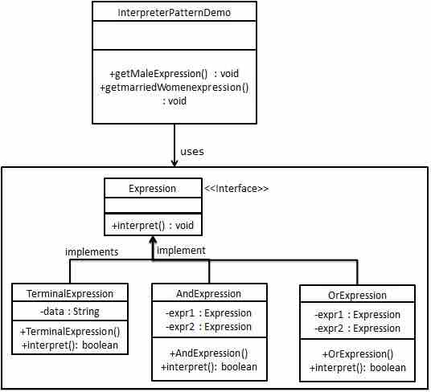Step 1
Create an expression interface.
Expression.java
public interface Expression {
public boolean interpret(String context);
}
Step 2
Create concrete classes implementing the above interface.
TerminalExpression.java
public class TerminalExpression implements Expression {
private String data;
public TerminalExpression(String data){
this.data = data;
}
@Override
public boolean interpret(String context) {
if(context.contains(data)){
return true;
}
return false;
}
}
OrExpression.java
public class OrExpression implements Expression {
private Expression expr1 = null;
private Expression expr2 = null;
public OrExpression(Expression expr1, Expression expr2) {
this.expr1 = expr1;
this.expr2 = expr2;
}
@Override
public boolean interpret(String context) {
return expr1.interpret(context) || expr2.interpret(context);
}
}
AndExpression.java
public class AndExpression implements Expression {
private Expression expr1 = null;
private Expression expr2 = null;
public AndExpression(Expression expr1, Expression expr2) {
this.expr1 = expr1;
this.expr2 = expr2;
}
@Override
public boolean interpret(String context) {
return expr1.interpret(context) && expr2.interpret(context);
}
}
Step 3
InterpreterPatternDemo uses Expression class to create rules and then parse them.
InterpreterPatternDemo.java
public class InterpreterPatternDemo {
//Rule: Robert and John are male
public static Expression getMaleExpression(){
Expression robert = new TerminalExpression("Robert");
Expression john = new TerminalExpression("John");
return new OrExpression(robert, john);
}
//Rule: Julie is a married women
public static Expression getMarriedWomanExpression(){
Expression julie = new TerminalExpression("Julie");
Expression married = new TerminalExpression("Married");
return new AndExpression(julie, married);
}
public static void main(String[] args) {
Expression isMale = getMaleExpression();
Expression isMarriedWoman = getMarriedWomanExpression();
System.out.println("John is male? " + isMale.interpret("John"));
System.out.println("Julie is a married women? "
+ isMarriedWoman.interpret("Married Julie"));
}
}
Step 4
Verify the output.
John is male? true Julie is a married women? true
Iterator Pattern
Iterator pattern is very commonly used design pattern in Java and .Net programming environment. This pattern is used to get a way to access the elements of a collection object in sequential manner without any need to know its underlying representation.
Iterator pattern falls under behavioral pattern category.
Implementation
We're going to create a Iterator interface which narrates navigation method and a Container interface which retruns the iterator . Concrete classes implementing the Container interface will be responsible to implement Iterator interface and use it
IteratorPatternDemo, our demo class will use NamesRepository, a concrete class implementation to print a Names stored as a collection in NamesRepository.
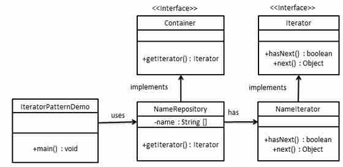Step 1
Create interfaces.
Iterator.java
public interface Iterator {
public boolean hasNext();
public Object next();
}
Container.java
public interface Container {
public Iterator getIterator();
}
Step 2
Create concrete class implementing the Container interface. This class has inner class NameIterator implementing the Iterator interface.
NameRepository.java
public class NameRepository implements Container {
public String names[] = {"Robert" , "John" ,"Julie" , "Lora"};
@Override
public Iterator getIterator() {
return new NameIterator();
}
private class NameIterator implements Iterator {
int index;
@Override
public boolean hasNext() {
if(index < names.length){
return true;
}
return false;
}
@Override
public Object next() {
if(this.hasNext()){
return names[index++];
}
return null;
}
}
}
Step 3
Use the NameRepository to get iterator and print names.
IteratorPatternDemo.java
public class IteratorPatternDemo {
public static void main(String[] args) {
NameRepository namesRepository = new NameRepository();
for(Iterator iter = namesRepository.getIterator(); iter.hasNext();){
String name = (String)iter.next();
System.out.println("Name : " + name);
}
}
}
Step 4
Verify the output.
Name : Robert Name : John Name : Julie Name : Lora
Mediator Pattern
Mediator pattern is used to reduce communication complexity between multiple objects or classes. This pattern provides a mediator class which normally handles all the communications between different classes and supports easy maintainability of the code by loose coupling. Mediator pattern falls under behavioral pattern category.
Implementation
We're demonstrating mediator pattern by example of a Chat Room where multiple users can send message to Chat Room and it is the responsibility of Chat Room to show the messages to all users. We've created two classes ChatRoom and User. User objects will use ChatRoom method to share their messages.
MediatorPatternDemo, our demo class will use User objects to show communication between them.
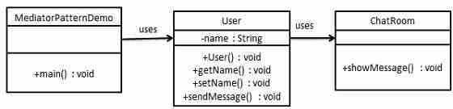Step 1
Create mediator class.
ChatRoom.java
import java.util.Date;
public class ChatRoom {
public static void showMessage(User user, String message){
System.out.println(new Date().toString()
+ " [" + user.getName() +"] : " + message);
}
}
Step 2
Create user class
User.java
public class User {
private String name;
public String getName() {
return name;
}
public void setName(String name) {
this.name = name;
}
public User(String name){
this.name = name;
}
public void sendMessage(String message){
ChatRoom.showMessage(this,message);
}
}
Step 3
Use the User object to show communications between them.
MediatorPatternDemo.java
public class MediatorPatternDemo {
public static void main(String[] args) {
User robert = new User("Robert");
User john = new User("John");
robert.sendMessage("Hi! John!");
john.sendMessage("Hello! Robert!");
}
}
Step 4
Verify the output.
Thu Jan 31 16:05:46 IST 2013 [Robert] : Hi! John! Thu Jan 31 16:05:46 IST 2013 [John] : Hello! Robert!
Memento Pattern
Memento pattern is used to reduce where we want to restore state of an object to a previous state. Memento pattern falls under behavioral pattern category.
Implementation
Memento pattern uses three actor classes. Memento contains state of an object to be restored. Originator creates and stores states in Memento objects and Caretaker object which is responsible to restore object state from Memento. We've created classes Memento, Originator and CareTaker.
MementoPatternDemo, our demo class will use CareTaker and Originator objects to show restoration of object states.
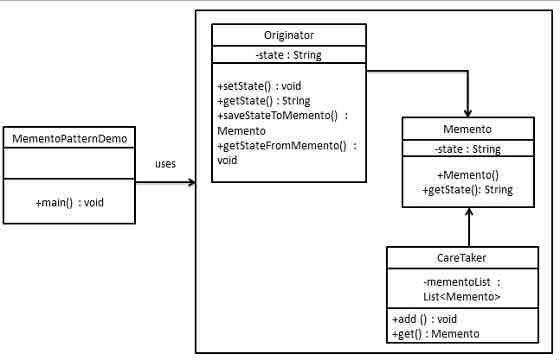Step 1
Create Memento class.
Memento.java
public class Memento {
private String state;
public Memento(String state){
this.state = state;
}
public String getState(){
return state;
}
}
Step 2
Create Originator class
Originator.java
public class Originator {
private String state;
public void setState(String state){
this.state = state;
}
public String getState(){
return state;
}
public Memento saveStateToMemento(){
return new Memento(state);
}
public void getStateFromMemento(Memento Memento){
state = Memento.getState();
}
}
Step 3
Create CareTaker class
CareTaker.java
import java.util.ArrayList;
import java.util.List;
public class CareTaker {
private List<Memento> mementoList = new ArrayList<Memento>();
public void add(Memento state){
mementoList.add(state);
}
public Memento get(int index){
return mementoList.get(index);
}
}
Step 4
Use CareTaker and Originator objects.
MementoPatternDemo.java
public class MementoPatternDemo {
public static void main(String[] args) {
Originator originator = new Originator();
CareTaker careTaker = new CareTaker();
originator.setState("State #1");
originator.setState("State #2");
careTaker.add(originator.saveStateToMemento());
originator.setState("State #3");
careTaker.add(originator.saveStateToMemento());
originator.setState("State #4");
System.out.println("Current State: " + originator.getState());
originator.getStateFromMemento(careTaker.get(0));
System.out.println("First saved State: " + originator.getState());
originator.getStateFromMemento(careTaker.get(1));
System.out.println("Second saved State: " + originator.getState());
}
}
Step 5
Verify the output.
Current State: State #4 First saved State: State #2 Second saved State: State #3
Observer Pattern
Observer pattern is used when there is one to many relationship between objects such as if one object is modified, its depenedent objects are to be notified automatically. Observer pattern falls under behavioral pattern category.
Implementation
Observer pattern uses three actor classes. Subject, Observer and Client. Subject, an object having methods to attach and de-attach observers to a client object. We've created classes Subject, Observer abstract class and concrete classes extending the abstract class the Observer.
ObserverPatternDemo, our demo class will use Subject and concrete class objects to show observer pattern in action.
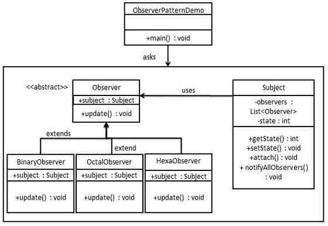Step 1
Create Subject class.
Subject.java
import java.util.ArrayList;
import java.util.List;
public class Subject {
private List<Observer> observers
= new ArrayList<Observer>();
private int state;
public int getState() {
return state;
}
public void setState(int state) {
this.state = state;
notifyAllObservers();
}
public void attach(Observer observer){
observers.add(observer);
}
public void notifyAllObservers(){
for (Observer observer : observers) {
observer.update();
}
}
}
Step 2
Create Observer class.
Observer.java
public abstract class Observer {
protected Subject subject;
public abstract void update();
}
Step 3
Create concrete observer classes
BinaryObserver.java
public class BinaryObserver extends Observer{
public BinaryObserver(Subject subject){
this.subject = subject;
this.subject.attach(this);
}
@Override
public void update() {
System.out.println( "Binary String: "
+ Integer.toBinaryString( subject.getState() ) );
}
}
OctalObserver.java
public class OctalObserver extends Observer{
public OctalObserver(Subject subject){
this.subject = subject;
this.subject.attach(this);
}
@Override
public void update() {
System.out.println( "Octal String: "
+ Integer.toOctalString( subject.getState() ) );
}
}
HexaObserver.java
public class HexaObserver extends Observer{
public HexaObserver(Subject subject){
this.subject = subject;
this.subject.attach(this);
}
@Override
public void update() {
System.out.println( "Hex String: "
+ Integer.toHexString( subject.getState() ).toUpperCase() );
}
}
Step 4
Use Subject and concrete observer objects.
ObserverPatternDemo.java
public class ObserverPatternDemo {
public static void main(String[] args) {
Subject subject = new Subject();
new HexaObserver(subject);
new OctalObserver(subject);
new BinaryObserver(subject);
System.out.println("First state change: 15");
subject.setState(15);
System.out.println("Second state change: 10");
subject.setState(10);
}
}
Step 5
Verify the output.
First state change: 15 Hex String: F Octal String: 17 Binary String: 1111 Second state change: 10 Hex String: A Octal String: 12 Binary String: 1010
State Pattern
In State pattern a class behavior changes based on its state. This type of design pattern comes under behavior pattern.
In State pattern, we create objects which represent various states and a context object whose behavior varies as its state object changes.
Implementation
We're going to create a State interface defining a action and concrete state classes implementing the State interface. Context is a class which carries a State.
StaePatternDemo, our demo class will use Context and state objects to demonstrate change in Context behavior based on type of state it is in.
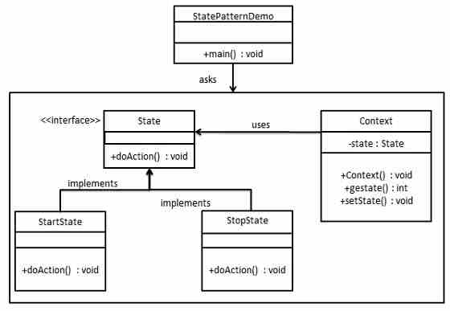Step 1
Create an interface.
Image.java
public interface State {
public void doAction(Context context);
}
Step 2
Create concrete classes implementing the same interface.
StartState.java
public class StartState implements State {
public void doAction(Context context) {
System.out.println("Player is in start state");
context.setState(this);
}
public String toString(){
return "Start State";
}
}
StopState.java
public class StopState implements State {
public void doAction(Context context) {
System.out.println("Player is in stop state");
context.setState(this);
}
public String toString(){
return "Stop State";
}
}
Step 3
Create Context Class.
Context.java
public class Context {
private State state;
public Context(){
state = null;
}
public void setState(State state){
this.state = state;
}
public State getState(){
return state;
}
}
Step 4
Use the Context to see change in behaviour when State changes.
StatePatternDemo.java
public class StatePatternDemo {
public static void main(String[] args) {
Context context = new Context();
StartState startState = new StartState();
startState.doAction(context);
System.out.println(context.getState().toString());
StopState stopState = new StopState();
stopState.doAction(context);
System.out.println(context.getState().toString());
}
}
Step 5
Verify the output.
Player is in start state Start State Player is in stop state Stop State
Null Object Pattern
In Null Object pattern, a null object replaces check of NULL object instance. Instead of putting if check for a null value, Null Object reflects a do nothing relationship. Such Null object can also be used to provide default behaviour in case data is not available.
In Null Object pattern, we create a abstract class specifying the various operations to be done, concreate classes extending this class and a null object class providing do nothing implemention of this class and will be used seemlessly where we need to check null value.
Implementation
We're going to create a AbstractCustomer abstract class defining opearations, here the name of the customer and concrete classes extending the AbstractCustomer class. A factory class CustomerFactory is created to return either RealCustomer or NullCustomer objects based on the name of customer passed to it.
NullPatternDemo, our demo class will use CustomerFactory to demonstrate use of Null Object pattern.
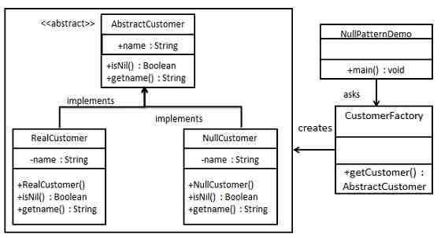Step 1
Create an abstract class.
AbstractCustomer.java
public abstract class AbstractCustomer {
protected String name;
public abstract boolean isNil();
public abstract String getName();
}
Step 2
Create concrete classes extending the above class.
RealCustomer.java
public class RealCustomer extends AbstractCustomer {
public RealCustomer(String name) {
this.name = name;
}
@Override
public String getName() {
return name;
}
@Override
public boolean isNil() {
return false;
}
}
NullCustomer.java
public class NullCustomer extends AbstractCustomer {
@Override
public String getName() {
return "Not Available in Customer Database";
}
@Override
public boolean isNil() {
return true;
}
}
Step 3
Create CustomerFactory Class.
CustomerFactory.java
public class CustomerFactory {
public static final String[] names = {"Rob", "Joe", "Julie"};
public static AbstractCustomer getCustomer(String name){
for (int i = 0; i < names.length; i++) {
if (names[i].equalsIgnoreCase(name)){
return new RealCustomer(name);
}
}
return new NullCustomer();
}
}
Step 4
Use the CustomerFactory get either RealCustomer or NullCustomer objects based on the name of customer passed to it.
NullPatternDemo.java
public class NullPatternDemo {
public static void main(String[] args) {
AbstractCustomer customer1 = CustomerFactory.getCustomer("Rob");
AbstractCustomer customer2 = CustomerFactory.getCustomer("Bob");
AbstractCustomer customer3 = CustomerFactory.getCustomer("Julie");
AbstractCustomer customer4 = CustomerFactory.getCustomer("Laura");
System.out.println("Customers");
System.out.println(customer1.getName());
System.out.println(customer2.getName());
System.out.println(customer3.getName());
System.out.println(customer4.getName());
}
}
Step 5
Verify the output.
Customers Rob Not Available in Customer Database Julie Not Available in Customer Database
Strategy Pattern
In Strategy pattern, a class behavior or its algorithm can be changed at run time. This type of design pattern comes under behavior pattern.
In Strategy pattern, we create objects which represent various strategies and a context object whose behavior varies as per its strategy object. The strategy object changes the executing algorithm of the context object.
Implementation
We're going to create a Strategy interface defining a action and concrete strategy classes implementing the Strategy interface. Context is a class which uses a Strategy.
StrategyPatternDemo, our demo class will use Context and strategy objects to demonstrate change in Context behaviour based on strategy it deploys or uses.
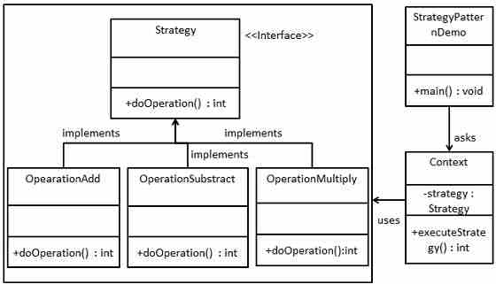Step 1
Create an interface.
Strategy.java
public interface Strategy {
public int doOperation(int num1, int num2);
}
Step 2
Create concrete classes implementing the same interface.
OperationAdd.java
public class OperationAdd implements Strategy{
@Override
public int doOperation(int num1, int num2) {
return num1 + num2;
}
}
OperationSubstract.java
public class OperationSubstract implements Strategy{
@Override
public int doOperation(int num1, int num2) {
return num1 - num2;
}
}
OperationMultiply.java
public class OperationMultiply implements Strategy{
@Override
public int doOperation(int num1, int num2) {
return num1 * num2;
}
}
Step 3
Create Context Class.
Context.java
public class Context {
private Strategy strategy;
public Context(Strategy strategy){
this.strategy = strategy;
}
public int executeStrategy(int num1, int num2){
return strategy.doOperation(num1, num2);
}
}
Step 4
Use the Context to see change in behaviour when it changes its Strategy.
StatePatternDemo.java
public class StrategyPatternDemo {
public static void main(String[] args) {
Context context = new Context(new OperationAdd());
System.out.println("10 + 5 = " + context.executeStrategy(10, 5));
context = new Context(new OperationSubstract());
System.out.println("10 - 5 = " + context.executeStrategy(10, 5));
context = new Context(new OperationMultiply());
System.out.println("10 * 5 = " + context.executeStrategy(10, 5));
}
}
Step 5
Verify the output.
10 + 5 = 15 10 - 5 = 5 10 * 5 = 50
Template Pattern
In Template pattern, an abstract class exposes defined way(s)/template(s) to execute its methods. Its subclasses can overrides the method implementations as per need basis but the invocation is to be in the same way as defined by an abstract class. This pattern comes under behavior pattern category.
Implementation
We're going to create a Game abstract class defining operations with a template method set to be final so that it cannot be overridden. Cricket and Football are concrete classes extend Game and override its methods.
TemplatePatternDemo, our demo class will use Game to demonstrate use of template pattern.
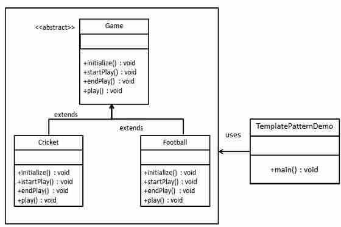Step 1
Create an abstract class with a template method being final.
Game.java
public abstract class Game {
abstract void initialize();
abstract void startPlay();
abstract void endPlay();
//template method
public final void play(){
//initialize the game
initialize();
//start game
startPlay();
//end game
endPlay();
}
}
Step 2
Create concrete classes extending the above class.
Cricket.java
public class Cricket extends Game {
@Override
void endPlay() {
System.out.println("Cricket Game Finished!");
}
@Override
void initialize() {
System.out.println("Cricket Game Initialized! Start playing.");
}
@Override
void startPlay() {
System.out.println("Cricket Game Started. Enjoy the game!");
}
}
Football.java
public class Football extends Game {
@Override
void endPlay() {
System.out.println("Football Game Finished!");
}
@Override
void initialize() {
System.out.println("Football Game Initialized! Start playing.");
}
@Override
void startPlay() {
System.out.println("Football Game Started. Enjoy the game!");
}
}
Step 3
Use the Game's template method play() to demonstrate a defined way of playing game.
TemplatePatternDemo.java
public class TemplatePatternDemo {
public static void main(String[] args) {
Game game = new Cricket();
game.play();
System.out.println();
game = new Football();
game.play();
}
}
Step 4
Verify the output.
Cricket Game Initialized! Start playing. Cricket Game Started. Enjoy the game! Cricket Game Finished! Football Game Initialized! Start playing. Football Game Started. Enjoy the game! Football Game Finished!
Visitor Pattern
In Visitor pattern, we use a visitor class which changes the executing algorithm of an element class. By this way, execution algorithm of element can varies as visitor varies. This pattern comes under behavior pattern category. As per the pattern, element object has to accept the visitor object so that visitor object handles the operation on the element object.
Implementation
We're going to create a ComputerPart interface defining accept opearation.Keyboard, Mouse, Monitor and Computer are concrete classes implementing ComputerPart interface. We'll define another interface ComputerPartVisitor which will define a visitor class operations. Computer uses concrete visitor to do corresponding action.
VisitorPatternDemo, our demo class will use Computer, ComputerPartVisitor classes to demonstrate use of visitor pattern.
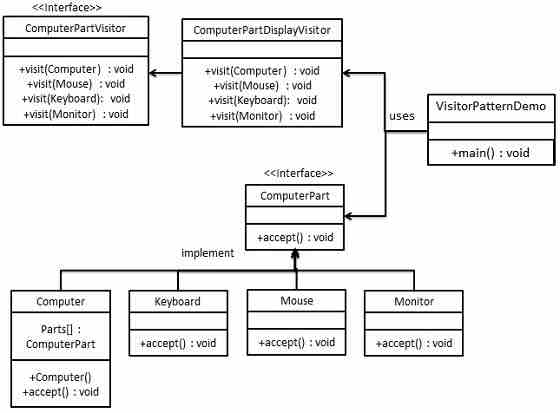Step 1
Define an interface to represent element.
ComputerPart.java
public interface class ComputerPart {
public void accept(ComputerPartVisitor computerPartVisitor);
}
Step 2
Create concrete classes extending the above class.
Keyboard.java
public class Keyboard implements ComputerPart {
@Override
public void accept(ComputerPartVisitor computerPartVisitor) {
computerPartVisitor.visit(this);
}
}
Monitor.java
public class Monitor implements ComputerPart {
@Override
public void accept(ComputerPartVisitor computerPartVisitor) {
computerPartVisitor.visit(this);
}
}
Mouse.java
public class Mouse implements ComputerPart {
@Override
public void accept(ComputerPartVisitor computerPartVisitor) {
computerPartVisitor.visit(this);
}
}
Computer.java
public class Computer implements ComputerPart {
ComputerPart[] parts;
public Computer(){
parts = new ComputerPart[] {new Mouse(), new Keyboard(), new Monitor()};
}
@Override
public void accept(ComputerPartVisitor computerPartVisitor) {
for (int i = 0; i < parts.length; i++) {
parts[i].accept(computerPartVisitor);
}
computerPartVisitor.visit(this);
}
}
Step 3
Define an interface to represent visitor.
ComputerPartVisitor.java
public interface ComputerPartVisitor {
public void visit(Computer computer);
public void visit(Mouse mouse);
public void visit(Keyboard keyboard);
public void visit(Monitor monitor);
}
Step 4
Create concrete visitor implementing the above class.
ComputerPartDisplayVisitor.java
public class ComputerPartDisplayVisitor implements ComputerPartVisitor {
@Override
public void visit(Computer computer) {
System.out.println("Displaying Computer.");
}
@Override
public void visit(Mouse mouse) {
System.out.println("Displaying Mouse.");
}
@Override
public void visit(Keyboard keyboard) {
System.out.println("Displaying Keyboard.");
}
@Override
public void visit(Monitor monitor) {
System.out.println("Displaying Monitor.");
}
}
Step 5
Use the ComputerPartDisplayVisitor to display parts of Computer.
VisitorPatternDemo.java
public class VisitorPatternDemo {
public static void main(String[] args) {
ComputerPart computer = new Computer();
computer.accept(new ComputerPartDisplayVisitor());
}
}
Step 6
Verify the output.
Displaying Mouse. Displaying Keyboard. Displaying Monitor. Displaying Computer.
MVC Pattern
MVC Pattern stands for Model-View-Controller Pattern. This pattern is used to separate application's concerns.
Model - Model represents an object or JAVA POJO carrying data. It can also have logic to update controller if its data changes.
View - View represents the visualization of the data that model contains.
Controller - Controller acts on both Model and view. It controls the data flow into model object and updates the view whenever data changes. It keeps View and Model separate.
Implementation
We're going to create a Student object acting as a model.StudentView will be a view class which can print student details on console and StudentController is the controller class responsible to store data in Student object and update view StudentView accordingly.
MVCPatternDemo, our demo class will use StudentController to demonstrate use of MVC pattern.
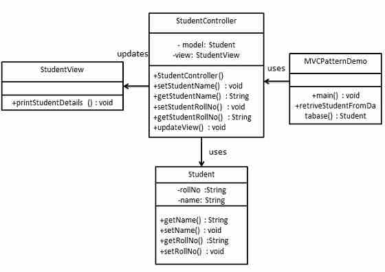Step 1
Create Model.
Student.java
public class Student {
private String rollNo;
private String name;
public String getRollNo() {
return rollNo;
}
public void setRollNo(String rollNo) {
this.rollNo = rollNo;
}
public String getName() {
return name;
}
public void setName(String name) {
this.name = name;
}
}
Step 2
Create View.
StudentView.java
public class StudentView {
public void printStudentDetails(String studentName, String studentRollNo){
System.out.println("Student: ");
System.out.println("Name: " + studentName);
System.out.println("Roll No: " + studentRollNo);
}
}
Step 3
Create Controller.
StudentController.java
public class StudentController {
private Student model;
private StudentView view;
public StudentController(Student model, StudentView view){
this.model = model;
this.view = view;
}
public void setStudentName(String name){
model.setName(name);
}
public String getStudentName(){
return model.getName();
}
public void setStudentRollNo(String rollNo){
model.setRollNo(rollNo);
}
public String getStudentRollNo(){
return model.getRollNo();
}
public void updateView(){
view.printStudentDetails(model.getName(), model.getRollNo());
}
}
Step 4
Use the StudentController methods to demonstrate MVC design pattern usage.
MVCPatternDemo.java
public class MVCPatternDemo {
public static void main(String[] args) {
//fetch student record based on his roll no from the database
Student model = retriveStudentFromDatabase();
//Create a view : to write student details on console
StudentView view = new StudentView();
StudentController controller = new StudentController(model, view);
controller.updateView();
//update model data
controller.setStudentName("John");
controller.updateView();
}
private static Student retriveStudentFromDatabase(){
Student student = new Student();
student.setName("Robert");
student.setRollNo("10");
return student;
}
}
Step 5
Verify the output.
Student: Name: Robert Roll No: 10 Student: Name: Julie Roll No: 10
Business Delegate Pattern
Business Delegate Pattern is used to decouple presentation tier and business tier. It is basically use to reduce communication or remote lookup functionality to business tier code in presentation tier code. In business tier we've following entities.
Client - Presentation tier code may be JSP, servlet or UI java code.
Business Delegate - A single entry point class for client entities to provide access to Business Service methods.
LookUp Service - Lookup service object is responsible to get relative business implementation and provide business object access to business delegate object.
Business Service - Business Service interface. Concrete classes implements this business service to provide actual business implementation logic.
Implementation
We're going to create a Client, BusinessDelegate, BusinessService, LookUpService, JMSService and EJBService representing various entities of Business Delegate pattern.
BusinessDelegatePatternDemo, our demo class will use BusinessDelegate and Client to demonstrate use of Business Delegate pattern.
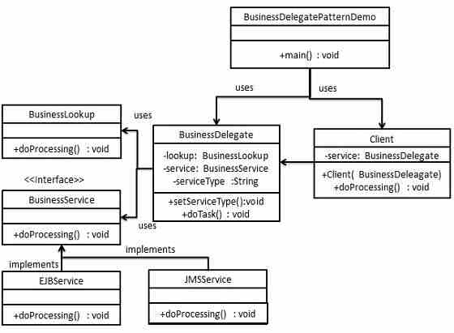Step 1
Create BusinessService Interface.
BusinessService.java
public interface BusinessService {
public void doProcessing();
}
Step 2
Create Concreate Service Classes.
EJBService.java
public class EJBService implements BusinessService {
@Override
public void doProcessing() {
System.out.println("Processing task by invoking EJB Service");
}
}
JMSService.java
public class JMSService implements BusinessService {
@Override
public void doProcessing() {
System.out.println("Processing task by invoking JMS Service");
}
}
Step 3
Create Business Lookup Service.
BusinessLookUp.java
public class BusinessLookUp {
public BusinessService getBusinessService(String serviceType){
if(serviceType.equalsIgnoreCase("EJB")){
return new EJBService();
}else {
return new JMSService();
}
}
}
Step 4
Create Business Delegate.
BusinessLookUp.java
public class BusinessDelegate {
private BusinessLookUp lookupService = new BusinessLookUp();
private BusinessService businessService;
private String serviceType;
public void setServiceType(String serviceType){
this.serviceType = serviceType;
}
public void doTask(){
businessService = lookupService.getBusinessService(serviceType);
businessService.doProcessing();
}
}
Step 5
Create Client.
Student.java
public class Client {
BusinessDelegate businessService;
public Client(BusinessDelegate businessService){
this.businessService = businessService;
}
public void doTask(){
businessService.doTask();
}
}
Step 6
Use BusinessDelegate and Client classes to demonstrate Business Delegate pattern.
BusinessDelegatePatternDemo.java
public class BusinessDelegatePatternDemo {
public static void main(String[] args) {
BusinessDelegate businessDelegate = new BusinessDelegate();
businessDelegate.setServiceType("EJB");
Client client = new Client(businessDelegate);
client.doTask();
businessDelegate.setServiceType("JMS");
client.doTask();
}
}
Step 7
Verify the output.
Processing task by invoking EJB Service Processing task by invoking JMS Service
Composite Entity Pattern
Composite Entity pattern is used in EJB persistence mechanism. A Composite entity is an EJB entity bean which represents a graph of objects. When a composite entity is updated, internally dependent objects beans get updated automatically as being managed by EJB entity bean. Following are the participants in Composite Entity Bean.
Composite Entity - It is primary entity bean.It can be coarse grained or can contain a coarse grained object to be used for persistence purpose.
Coarse-Grained Object -This object contains dependent objects. It has its own life cycle and also manages life cycle of dependent objects.
Dependent Object - Dependent objects is an object which depends on Coarse-Grained object for its persistence lifecycle.
Strategies - Strategies represents how to implement a Composite Entity.
Implementation
We're going to create CompositeEntity object acting as CompositeEntity. CoarseGrainedObject will be a class which contains dependent objects. CompositeEntityPatternDemo, our demo class will use Client class to demonstrate use of Composite Entity pattern.
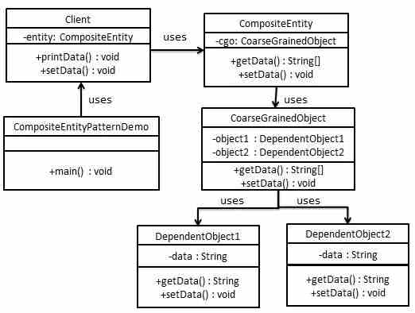Step 1
Create Dependent Objects.
DependentObject1.java
public class DependentObject1 {
private String data;
public void setData(String data){
this.data = data;
}
public String getData(){
return data;
}
}
DependentObject2.java
public class DependentObject2 {
private String data;
public void setData(String data){
this.data = data;
}
public String getData(){
return data;
}
}
Step 2
Create Coarse Grained Object.
CoarseGrainedObject.java
public class CoarseGrainedObject {
DependentObject1 do1 = new DependentObject1();
DependentObject2 do2 = new DependentObject2();
public void setData(String data1, String data2){
do1.setData(data1);
do2.setData(data2);
}
public String[] getData(){
return new String[] {do1.getData(),do2.getData()};
}
}
Step 3
Create Composite Entity.
CompositeEntity.java
public class CompositeEntity {
private CoarseGrainedObject cgo = new CoarseGrainedObject();
public void setData(String data1, String data2){
cgo.setData(data1, data2);
}
public String[] getData(){
return cgo.getData();
}
}
Step 4
Create Client class to use Composite Entity.
Client.java
public class Client {
private CompositeEntity compositeEntity = new CompositeEntity();
public void printData(){
for (int i = 0; i < compositeEntity.getData().length; i++) {
System.out.println("Data: " + compositeEntity.getData()[i]);
}
}
public void setData(String data1, String data2){
compositeEntity.setData(data1, data2);
}
}
Step 5
Use the Client to demonstrate Composite Entity design pattern usage.
CompositeEntityPatternDemo.java
public class CompositeEntityPatternDemo {
public static void main(String[] args) {
Client client = new Client();
client.setData("Test", "Data");
client.printData();
client.setData("Second Test", "Data1");
client.printData();
}
}
Step 6
Verify the output.
Data: Test Data: Data Data: Second Test Data: Data1
Data Access Object Pattern
Data Access Object Pattern or DAO pattern is used to separate low level data accessing API or operations from high level business services. Following are the participants in Data Access Object Pattern.
Data Access Object Interface - This interface defines the standard operations to be performed on a model object(s).
Data Access Object concrete class -This class implements above interface. This class is responsible to get data from a datasource which can be database / xml or any other storage mechanism.
Model Object or Value Object - This object is simple POJO containing get/set methods to store data retrieved using DAO class.
Implementation
We're going to create a Student object acting as a Model or Value Object.StudentDao is Data Access Object Interface.StudentDaoImpl is concrete class implementing Data Access Object Interface. DaoPatternDemo, our demo class will use StudentDao demonstrate use of Data Access Object pattern.
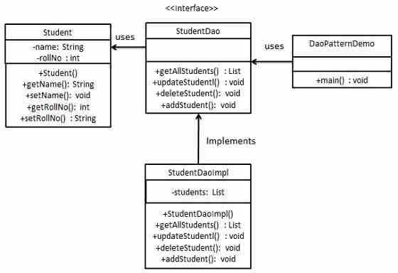Step 1
Create Value Object.
Student.java
public class Student {
private String name;
private int rollNo;
Student(String name, int rollNo){
this.name = name;
this.rollNo = rollNo;
}
public String getName() {
return name;
}
public void setName(String name) {
this.name = name;
}
public int getRollNo() {
return rollNo;
}
public void setRollNo(int rollNo) {
this.rollNo = rollNo;
}
}
Step 2
Create Data Access Object Interface.
StudentDao.java
import java.util.List;
public interface StudentDao {
public List<Student> getAllStudents();
public Student getStudent(int rollNo);
public void updateStudent(Student student);
public void deleteStudent(Student student);
}
Step 3
Create concreate class implementing above interface.
StudentDaoImpl.java
import java.util.ArrayList;
import java.util.List;
public class StudentDaoImpl implements StudentDao {
//list is working as a database
List<Student> students;
public StudentDaoImpl(){
students = new ArrayList<Student>();
Student student1 = new Student("Robert",0);
Student student2 = new Student("John",1);
students.add(student1);
students.add(student2);
}
@Override
public void deleteStudent(Student student) {
students.remove(student.getRollNo());
System.out.println("Student: Roll No " + student.getRollNo()
+", deleted from database");
}
//retrive list of students from the database
@Override
public List<Student> getAllStudents() {
return students;
}
@Override
public Student getStudent(int rollNo) {
return students.get(rollNo);
}
@Override
public void updateStudent(Student student) {
students.get(student.getRollNo()).setName(student.getName());
System.out.println("Student: Roll No " + student.getRollNo()
+", updated in the database");
}
}
Step 4
Use the StudentDao to demonstrate Data Access Object pattern usage.
CompositeEntityPatternDemo.java
public class DaoPatternDemo {
public static void main(String[] args) {
StudentDao studentDao = new StudentDaoImpl();
//print all students
for (Student student : studentDao.getAllStudents()) {
System.out.println("Student: [RollNo : "
+student.getRollNo()+", Name : "+student.getName()+" ]");
}
//update student
Student student =studentDao.getAllStudents().get(0);
student.setName("Michael");
studentDao.updateStudent(student);
//get the student
studentDao.getStudent(0);
System.out.println("Student: [RollNo : "
+student.getRollNo()+", Name : "+student.getName()+" ]");
}
}
Step 5
Verify the output.
Student: [RollNo : 0, Name : Robert ] Student: [RollNo : 1, Name : John ] Student: Roll No 0, updated in the database Student: [RollNo : 0, Name : Michael ]
Front Controller Pattern
The front controller design pattern is used to provide a centralized request handling mechanism so that all requests will be handled by a single handler. This handler can do the authentication/ authorization/ logging or tracking of request and then pass the requests to corresponding handlers. Following are the entities of this type of design pattern.
Front Controller - Single handler for all kind of request coming to the application (either web based/ desktop based).
Dispatcher - Front Controller may use a dispatcher object which can dispatch the request to corresponding specific handler.
View - Views are the object for which the requests are made.
Implementation
We're going to create a FrontController,Dispatcher to act as Front Controller and Dispatcher correspondingly. HomeView and StudentView represent various views for which requests can come to front controller.
FrontControllerPatternDemo, our demo class will use FrontController ato demonstrate Front Controller Design Pattern.

Step 1
Create Views.
HomeView.java
public class HomeView {
public void show(){
System.out.println("Displaying Home Page");
}
}
StudentView.java
public class StudentView {
public void show(){
System.out.println("Displaying Student Page");
}
}
Step 2
Create Dispatcher.
Dispatcher.java
public class Dispatcher {
private StudentView studentView;
private HomeView homeView;
public Dispatcher(){
studentView = new StudentView();
homeView = new HomeView();
}
public void dispatch(String request){
if(request.equalsIgnoreCase("STUDENT")){
studentView.show();
}else{
homeView.show();
}
}
}
Step 3
Create FrontController
Context.java
public class FrontController {
private Dispatcher dispatcher;
public FrontController(){
dispatcher = new Dispatcher();
}
private boolean isAuthenticUser(){
System.out.println("User is authenticated successfully.");
return true;
}
private void trackRequest(String request){
System.out.println("Page requested: " + request);
}
public void dispatchRequest(String request){
//log each request
trackRequest(request);
//authenticate the user
if(isAuthenticUser()){
dispatcher.dispatch(request);
}
}
}
Step 4
Use the FrontController to demonstrate Front Controller Design Pattern.
FrontControllerPatternDemo.java
public class FrontControllerPatternDemo {
public static void main(String[] args) {
FrontController frontController = new FrontController();
frontController.dispatchRequest("HOME");
frontController.dispatchRequest("STUDENT");
}
}
Step 5
Verify the output.
Page requested: HOME User is authenticated successfully. Displaying Home Page Page requested: STUDENT User is authenticated successfully. Displaying Student Page
Intercepting Filter Pattern
The intercepting filter design pattern is used when we want to do some pre-processing / post-processing with request or response of the application. Filters are defined and applied on the request before passing the request to actual target application. Filters can do the authentication/ authorization/ logging or tracking of request and then pass the requests to corresponding handlers. Following are the entities of this type of design pattern.
Filter - Filter which will perform certain task prior or after execution of request by request handler.
Filter Chain - Filter Chain carries multiple filters and help to execute them in defined order on target.
Target - Target object is the request handler
Filter Manager - Filter Manager manages the filters and Filter Chain.
Client - Client is the object who sends request to the Target object.
Implementation
We're going to create a FilterChain,FilterManager, Target, Client as various objects representing our entities.AuthenticationFilter and DebugFilter represents concrete filters.
InterceptingFilterDemo, our demo class will use Client to demonstrate Intercepting Filter Design Pattern.
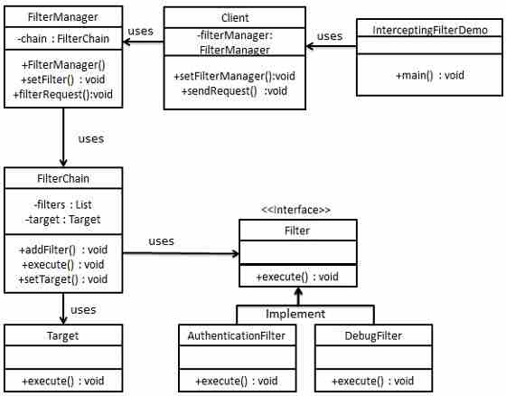Step 1
Create Filter interface.
Filter.java
public interface Filter {
public void execute(String request);
}
Step 2
Create concrete filters.
AuthenticationFilter.java
public class AuthenticationFilter implements Filter {
public void execute(String request){
System.out.println("Authenticating request: " + request);
}
}
DebugFilter.java
public class DebugFilter implements Filter {
public void execute(String request){
System.out.println("request log: " + request);
}
}
Step 3
Create Target
Target.java
public class Target {
public void execute(String request){
System.out.println("Executing request: " + request);
}
}
Step 4
Create Filter Chain
FilterChain.java
import java.util.ArrayList;
import java.util.List;
public class FilterChain {
private List<Filter> filters = new ArrayList<Filter>();
private Target target;
public void addFilter(Filter filter){
filters.add(filter);
}
public void execute(String request){
for (Filter filter : filters) {
filter.execute(request);
}
target.execute(request);
}
public void setTarget(Target target){
this.target = target;
}
}
Step 5
Create Filter Manager
FilterManager.java
public class FilterManager {
FilterChain filterChain;
public FilterManager(Target target){
filterChain = new FilterChain();
filterChain.setTarget(target);
}
public void setFilter(Filter filter){
filterChain.addFilter(filter);
}
public void filterRequest(String request){
filterChain.execute(request);
}
}
Step 6
Create Client
Client.java
public class Client {
FilterManager filterManager;
public void setFilterManager(FilterManager filterManager){
this.filterManager = filterManager;
}
public void sendRequest(String request){
filterManager.filterRequest(request);
}
}
Step 7
Use the Client to demonstrate Intercepting Filter Design Pattern.
FrontControllerPatternDemo.java
public class InterceptingFilterDemo {
public static void main(String[] args) {
FilterManager filterManager = new FilterManager(new Target());
filterManager.setFilter(new AuthenticationFilter());
filterManager.setFilter(new DebugFilter());
Client client = new Client();
client.setFilterManager(filterManager);
client.sendRequest("HOME");
}
}
Step 8
Verify the output.
Authenticating request: HOME request log: HOME Executing request: HOME
Service Locator Pattern
The service locator design pattern is used when we want to locate various services using JNDI lookup. Considering high cost of looking up JNDI for a service, Service Locator pattern makes use of caching technique. For the first time a service is required, Service Locator looks up in JNDI and caches the service object. Further lookup or same service via Service Locator is done in its cache which improves the performance of application to great extent. Following are the entities of this type of design pattern.
Service - Actual Service which will process the request. Reference of such service is to be looked upon in JNDI server.
Context / Initial Context -JNDI Context, carries the reference to service used for lookup purpose.
Service Locator - Service Locator is a single point of contact to get services by JNDI lookup, caching the services.
Cache - Cache to store references of services to reuse them
Client - Client is the object who invokes the services via ServiceLocator.
Implementation
We're going to create a ServiceLocator,InitialContext, Cache, Service as various objects representing our entities.Service1 and Service2 represents concrete services.
ServiceLocatorPatternDemo, our demo class is acting as a client here and will use ServiceLocator to demonstrate Service Locator Design Pattern.

Step 1
Create Service interface.
Service.java
public interface Service {
public String getName();
public void execute();
}
Step 2
Create concrete services.
Service1.java
public class Service1 implements Service {
public void execute(){
System.out.println("Executing Service1");
}
@Override
public String getName() {
return "Service1";
}
}
Service2.java
public class Service2 implements Service {
public void execute(){
System.out.println("Executing Service2");
}
@Override
public String getName() {
return "Service2";
}
}
Step 3
Create InitialContext for JNDI lookup
InitialContext.java
public class InitialContext {
public Object lookup(String jndiName){
if(jndiName.equalsIgnoreCase("SERVICE1")){
System.out.println("Looking up and creating a new Service1 object");
return new Service1();
}else if (jndiName.equalsIgnoreCase("SERVICE2")){
System.out.println("Looking up and creating a new Service2 object");
return new Service2();
}
return null;
}
}
Step 4
Create Cache
Cache.java
import java.util.ArrayList;
import java.util.List;
public class Cache {
private List<Service> services;
public Cache(){
services = new ArrayList<Service>();
}
public Service getService(String serviceName){
for (Service service : services) {
if(service.getName().equalsIgnoreCase(serviceName)){
System.out.println("Returning cached "+serviceName+" object");
return service;
}
}
return null;
}
public void addService(Service newService){
boolean exists = false;
for (Service service : services) {
if(service.getName().equalsIgnoreCase(newService.getName())){
exists = true;
}
}
if(!exists){
services.add(newService);
}
}
}
Step 5
Create Service Locator
ServiceLocator.java
public class ServiceLocator {
private static Cache cache;
static {
cache = new Cache();
}
public static Service getService(String jndiName){
Service service = cache.getService(jndiName);
if(service != null){
return service;
}
InitialContext context = new InitialContext();
Service service1 = (Service)context.lookup(jndiName);
cache.addService(service1);
return service1;
}
}
Step 6
Use the ServiceLocator to demonstrate Service Locator Design Pattern.
ServiceLocatorPatternDemo.java
public class ServiceLocatorPatternDemo {
public static void main(String[] args) {
Service service = ServiceLocator.getService("Service1");
service.execute();
service = ServiceLocator.getService("Service2");
service.execute();
service = ServiceLocator.getService("Service1");
service.execute();
service = ServiceLocator.getService("Service2");
service.execute();
}
}
Step 7
Verify the output.
Looking up and creating a new Service1 object Executing Service1 Looking up and creating a new Service2 object Executing Service2 Returning cached Service1 object Executing Service1 Returning cached Service2 object Executing Service2
Transfer Object Pattern
The Transfer Object pattern is used when we want to pass data with multiple attributes in one shot from client to server. Transfer object is also known as Value Object. Transfer Object is a simple POJO class having getter/setter methods and is serializable so that it can be transferred over the network. It do not have any behavior. Server Side business class normally fetches data from the database and fills the POJO and send it to the client or pass it by value. For client, transfer object is read-only. Client can create its own transfer object and pass it to server to update values in database in one shot. Following are the entities of this type of design pattern.
Business Object - Business Service which fills the Transfer Object with data.
Transfer Object -Simple POJO, having methods to set/get attributes only.
Client - Client either requests or sends the Transfer Object to Business Object.
Implementation
We're going to create a StudentBO as Business Object,Student as Transfer Object representing our entities.
TransferObjectPatternDemo, our demo class is acting as a client here and will use StudentBO and Student to demonstrate Transfer Object Design Pattern.
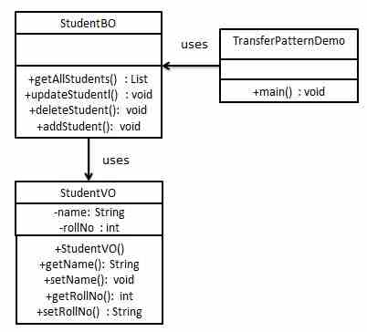Step 1
Create Transfer Object.
StudentVO.java
public class StudentVO {
private String name;
private int rollNo;
StudentVO(String name, int rollNo){
this.name = name;
this.rollNo = rollNo;
}
public String getName() {
return name;
}
public void setName(String name) {
this.name = name;
}
public int getRollNo() {
return rollNo;
}
public void setRollNo(int rollNo) {
this.rollNo = rollNo;
}
}
Step 2
Create Business Object.
StudentBO.java
import java.util.ArrayList;
import java.util.List;
public class StudentBO {
//list is working as a database
List<StudentVO> students;
public StudentBO(){
students = new ArrayList<StudentVO>();
StudentVO student1 = new StudentVO("Robert",0);
StudentVO student2 = new StudentVO("John",1);
students.add(student1);
students.add(student2);
}
public void deleteStudent(StudentVO student) {
students.remove(student.getRollNo());
System.out.println("Student: Roll No "
+ student.getRollNo() +", deleted from database");
}
//retrive list of students from the database
public List<StudentVO> getAllStudents() {
return students;
}
public StudentVO getStudent(int rollNo) {
return students.get(rollNo);
}
public void updateStudent(StudentVO student) {
students.get(student.getRollNo()).setName(student.getName());
System.out.println("Student: Roll No "
+ student.getRollNo() +", updated in the database");
}
}
Step 3
Use the StudentBO to demonstrate Transfer Object Design Pattern.
TransferObjectPatternDemo.java
public class TransferObjectPatternDemo {
public static void main(String[] args) {
StudentBO studentBusinessObject = new StudentBO();
//print all students
for (StudentVO student : studentBusinessObject.getAllStudents()) {
System.out.println("Student: [RollNo : "
+student.getRollNo()+", Name : "+student.getName()+" ]");
}
//update student
StudentVO student =studentBusinessObject.getAllStudents().get(0);
student.setName("Michael");
studentBusinessObject.updateStudent(student);
//get the student
studentBusinessObject.getStudent(0);
System.out.println("Student: [RollNo : "
+student.getRollNo()+", Name : "+student.getName()+" ]");
}
}
Step 4
Verify the output.
Student: [RollNo : 0, Name : Robert ] Student: [RollNo : 1, Name : John ] Student: Roll No 0, updated in the database Student: [RollNo : 0, Name : Michael ]